Rodzaje uczenia
- Uczenie nadzorowane (z nauczycielem) – budowa modelu z wykorzystaniem etykietowanego zbioru uczącego, tj. zbiór danych składa się z dwóch wektorów (
- Uczenie nienadzorowane (bez nauczyciela) – umożliwia budowę modelu opisującego ukrytestruktury i relacje w nieetykietowanym zbiorzeuczącym, tj. zbiór danych składa się wyłącznie z informacji wejściowych (x).
Główne zadania uczenia maszynowego
- Regresja – przyporządkowanie obiektom wartości liczbowym
- Klasyfikacja – przyporządkowanie obiektów do klas (wyjście jest wartością dyskretną)
- Klasteryzacja – grupowanie obiektów o podobnych cechach
Podział modeli
Modele można podzielić na:- white box model - Ich budowa wymaga wcześniejszej, pełnej wiedzy na temat modelowanego obiektu (procesu). Na podstawie tej wiedzy (prawa fizyki,chemii, …) układane są równania, które są rozwiązywane podczas symulacji.
- black box model - Nie wymagają wiedzy na temat modelowanego obiektu (procesu). Są tworzone w oparciu o obserwacje (eksperymenty) modelowanego obiektu. Obserwacje składają się ze zbioru zawierającego relację pomiędzy wyjściem a wejściem.
- grey box model - Są pewną kombinacją dwóch poprzednich grup. Ich budowa wymaga pewnej wiedzy teoretycznej, w oparciu o którą układane są odpowiednie równania opisujące modelowany obiekt, jak również obserwacje wykorzystywane do wyznaczenia współczynników występujący w równaniach.
- Metamodel - Metamodel jest to pewna abstrakcja stworzona na bazie modelu (niższego poziomu) analizowanego rzeczywistego procesu (obiektu) zbudowanego z wykorzystaniem wybranych metod modelowania matematycznego. Metamodelem może być każda aproksymacja modelu analizowanego procesu.
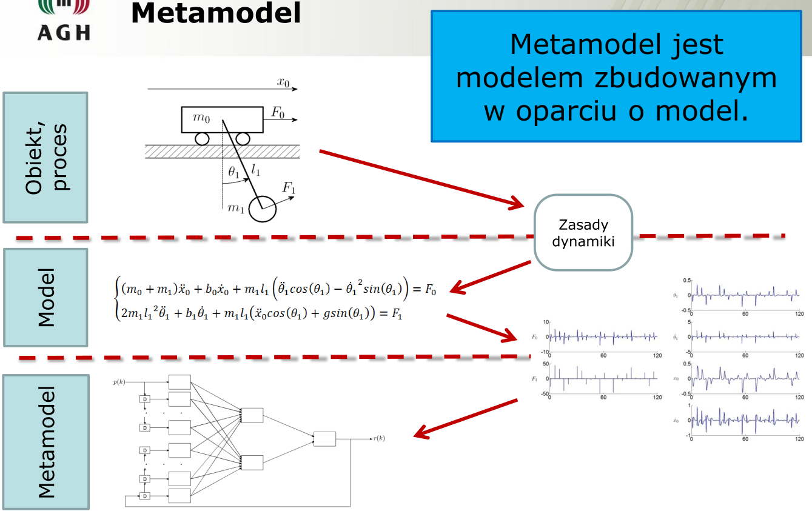
Błąd uczący to nie zawsze to samo co funkcja kosztu !
Z labów wiki:
przygotowanie danych:- ładowaniem danych,
- typami danych,
- czyszczeniem danych,
- rozkładami danych,
- obsługą wartości brakujących,
- zmiennymi kategorycznymi uporządkowanymi i nieuporządkowanymi,
- skalowaniem wartości,
- API biblioteki Scikit-Learn dla transformacji danych;
Biblioteki
- numpy - bibliotek do wykonywania obliczeń macierzowych. Pozwala na efektywne przeprowadzanie obliczeń naukowych. Dobrze współgra z biblioteką pandas.
- pandas - narzędzie do analizy danych tabelarycznych, ich strukturyzowania oraz manipulacji na nich.
- sklearn - narzędzie do tworzenia modeli klasyfikacji, regresji, clusteringu itp. Biblioteka ta jest dość rozbudowana i pozwala także na mapowanie danych czy redukcję
- missingno - narzędzie do wizualizacji kompletności danych (brakujących wartości).
- seaborn - kompleksowe narzędzie do wizualizacji danych jako takich. Pozwala na stworzenie bardzo szerokiej gamy wykresów w zależności od potrzeb.
Transformacja logarytmiczna zmiennej zależnej (którą chcemy przewidywać)
- Zawsze warto też przyjrzeć się rozkładowi zmiennej docelowej, żeby poznać jej typ i skalę.
- Rozkład normalny jest zwykle korzystniejszy dla tworzenia modeli, bo daje sensowną "wartość środkową" do przewidywania, a także penalizuje tak samo błędy niezależnie od ich znaku (zaniżona i zawyżona predykcja). Dokonamy dlatego transformacji logarytmicznej (log transform), czyli zlogarytmujemy zmienną docelową (zależną). Dla stabilności numerycznej używa się zwykle np.log1p, a nie np.log (tutaj wyjaśnienie).
- Operowanie na tzw. log-price jest bardzo częste w finansach. Dodatkowa korzyść z takiej transformacji jest taka, że regresja liniowa przewiduje dowolne wartości rzeczywiste. Po przekształceniu logarytmicznym jest to całkowicie ok, natomiast w oryginalnej przestrzeni trzeba by wymusić przewidywanie tylko wartości pozytywnych (negatywne ceny są bez sensu). Da się to zrobić, ale zwiększa to koszt obliczeniowy.
- np Przykład: - df['SalePrice'] = np.log1p(df['SalePrice']) - jeśli cena domów jest naszązmienną zależną
Dane kategoryczne
Istnieją dwa główne rodzaje danych:numeryczne (numerical data) Dane numeryczne to żadna niespodzianka, po prostu mają swoją wartość
kategoryczne (categorical data) Dane kategoryczne to takie, którym w większości przypadków nie można przyporządkować wartości liczbowej (wyjątkiem są: )
- kategoryczne uporządkowane - categorical ordinal
- kategoryczne nieuporządkowane - categorical nominal , np. zmienną reprezentującą kolory o wartościach "red", "green" i "blue. Jeżeli zakodowałbyś je np. jako $red = 0$, $green = 1$, $blue = 2$, to stwierdzasz tym samym, że w pewnym sensie $red < green < blue$. Raczej nie ma powodu, żeby tak sądzić. Jest to zmienna, która ma skończoną liczbę wartości, ale są one nieuporządkowane.
- binarne (boolean) - Przyjmuje ona dokładnie dwie wartości kategoryczne: No oraz Yes. W takiej sytuacji wolno zakodować te wartości numerycznie jako 0 i 1. Stwierdzasz tym samym, że coś albo jest, albo nie ma.
Przygotowanie danych do uczenia
Zbiór danych dzielimy na 2 zbiory:- treningowy (70% - 80%) uczenie modelu
- testowy (30% - 20%) szacowanie jakości - Wyniki uzyskiwane przez model na danych treningowych nie odzwierciedlają tego, jak będzie on sobie radził na danych, których nie ma w zbiorze uczącym. Aby uzyskać taką informację, konieczne jest sprawdzenie, jak model radzi sobie na danych testowych. Daje nam to oszacowanie, jak dobrze model *generalizuje się* dla nowych danych.
Funkcja train_test_split z biblioteki Scikit-Learn przyjmuje osobno macierze dla cech (*features*) i etykiet (*labels*), dlatego wyodrębniamy sobie z naszej tablicy kolumnę SalePrice, która zawiera ceny nieruchomości. y = df.pop("SalePrice") X_train, X_test, y_train, y_test = train_test_split( df, y, test_size=0.3, random_state=0 )
Warto wydzielić zbiory kolumn z danymi numerycznymi i kategorycznymi, co później ułatwi nam odwoływanie się do nich: categorical_features = df.select_dtypes(include="object").columns numerical_features = df.select_dtypes(exclude="object").columns
Nootacja macierzowa
wektor w matematyce często oznaczamy małą pogrubioną literą x - w programowaniu natomiast oznaczamy po prostu małą literą - xmacierz w matematyce oznaczamy dużą pogrubioną literą X - w programowaniu po prostu dużą literą - X
- Zbiór etykiet to w naszym przypadku *wektor* cen, więc zapisujemy y małą literą. Z drugiej strony X zawiera kolumny z cechami opisującymi poszczególne rekordy, a więc jest to *macierz*.
Uwaga: w eksperymentach ustalamy na sztywno wartość parametru random_state. Doczytaj, warto wstawiać 0 lub 42, wtedy zawsze mamy tak samo randomowo podzielony zbiór, co przydaje się do porównywania modeli, bez tych liczb w random_state, zwsze byśmy dostawali inne próbki w zbiorach
Transformacja danych
- one-hot encoding - zmienne kategoryczne nieuporządkowane trzeba przetworzyć tak, aby nasz algorym był w stanie je obsłużyć, czyli je zakodować. Przykładowo, jeżeli mielibyśmy 3 wartości ["A", "B", "C"], to powstają z nich 3 cechy (kolumny macierzy X) [col_A, col_B, col_C]. Wiersz z pierwotną wartością "B" będzie miał wartości tych cech [0, 1, 0]. - kardynalnoś zmiennych (cardinality) - czyli zmienna ma dużo możliwych wartości, więc kolumn w kodowaniu powstanie bardzo dużo. Są to zmienne rzadkie (sparse), więc tracimy dużo pamięci na przechowywanie zer. Istnieją inne kodowania, które zajmują mniej miejsca, a implementuje je biblioteka Category Encoders.- imputacja (impute) - uzupełnianie zmiennych numerycznych gdy mają wartości brakujące, mamy takie możliwości:
- 1 Usunąć kolumnę, która zawiera brakujące wartości.
- 2 Usunąć wiersze, w których brakuje wartości.
- 3 Zastąpić brakujące wartości innymi, np. średnią z kolumny, medianą albo wartością stałą.
- 4 Przewidzieć brakujące wartości wykorzystując odpowiedni model uczenia maszynowego.
- Pamiętaj, że imputacji dokonuje się dopiero po podziale na zbiór treningowy i testowy! W przeciwnym wypadku wykorzystywalibyśmy dane ze zbioru testowego, co sztucznie zawyżyłoby wyniki.
skalowanie danych
- normalizacja (normalization) zmienne numeryczne skalujemy do zakresu wartości $[0, 1]$ przez zastosowanie min-max scaling.- standaryzacja Polega na odjęciu średniej i podzieleniu przez odchylenie standardowe każdej cechy. Wynikiem przekształcenia są cechy o średniej 0 i odchyleniu standardowym 1.
- RobustScaler, który jest podobny do StandardScaler, ale używa mediany i kwartyli zamiast średniej i odchylenia standardowego. Są to tzw. robust statistics, czyli miary odporne na występowanie wartości odstających (outliers).
- Porównanie różnych metod skalowania możesz znaleźć tutaj.
- Więcej informacji na temat tego, dlaczego skalowanie jest tak istotne, możesz znaleźć tutaj.
Standaryzacja - metody .fit() i .transform() (tylko dla numerycznch)
Do wykonania standaryzacji potrzebujemy dla każdej z cech określić 2 wartości - średnią oraz odchylenie standardowe. Formuła standaryzacji dla przypomnienia: $$z = \frac{x - \mu}{\sigma}$$ Metodę .fit() wykonujemy tylko raz, dla danych treningowych. To powoduje, że obliczamy wartości $$\mu$$ oraz $$\sigma$$ dla każdej cechy, na podstawie wartości ze zbioru treningowego.Wyuczone wartości zostają zapisane w obiekcie StandardScaler i mogą być później używane do przeprowadzenia standaryzacji zarówno dla danych treningowych, jak i testowych.
Metoda .transform() przekształca dane za pomocą parametrów wyznaczonych w .fit(). Wykonujemy ją dla danych testowych.
Jest też metoda .fit_transform() która najpierw wykonuje .fit(), a potem .transform() i zwraca wynik ostatniej. W przypadku niektórych transformacji wykorzystuje ich specyfikę i działa szybciej, niż sekwencyjne wywołanie .fit() oraz.transform(). Trzeba jednak pamiętać, że możemy tego użyć tylko na zbiorze treningowym - na zbiorze testowym wywołujemy już tylko .transform().
Nie przeprowadzamy osobnej standaryzacji dla zbioru treningowego i testowego
Osobno przeprowadzając standaryzację dla danych testowych, zaburzylibyśmy rozkład tej cechy. Modele są niezwykle czułe na podobne zaburzenia - musimy przetwarzać dane spójnie.
Czemu nie wywołać .fit() na wszystkich danych, a nie tylko treningowych?
Wydzieliliśmy dane testowe po to, żeby sprawdzać, jak model poradzi sobie z danymi, których do tej pory nigdy nie widział, bo to właśnie takie dane będzie on dostawać w praktyce, po wdrożeniu do realnego systemu. Ta ocena obejmuje też etap preprocessingu, w tym skalowania. Więc jeśli etap preprocessingu zobaczy dane testowe, to nie będziemy w stanie uczciwie estymować jego zachowania na nowych danych.
Wyciek danych (data leakage)
To błąd metodologiczny. Wykorzystanie danych testowych w procesie treningu. Skutkuje on niepoprawnym, nadmiernie optymistycznym oszacowaniem jakości modelu.Klasyfikacja niezbalansowaną (imbalanced classification)
np.gdy klasa pozytywna jest w znacznej mniejszości, stanowi poniżej 5% zbioru. Mamy wtedy:- klasę dominującą (majority class)
- klasę mniejszościową (minority class).
- Pechowo prawie zawsze interesuje nas ta druga, bo klasa większościowa nie niesie najczęściej żadnych interesujących informacji. Przykładowo, 99% badanych jest zdrowych, a 1% ma niewykryty nowotwór - z oczywistych przyczyn chcemy wykrywać właśnie sytuację rzadką (problem diagnozy jako klasyfikacji jest zasadniczo zawsze niezbalansowany). W dalszej części laboratorium poznamy szereg konsekwencji tego zjawiska i metody na radzenie sobie z nim.
Próbkowanie ze stratyfikacją (stratified sampling)
- próbkowanie ze stratyfikacją - dzięki temu proporcje klas w zbiorze przed podziałem oraz obu zbiorach po podziale są takie same.
- Podział na zbiór treningowy i testowy to pierwszy moment, kiedy niezbalansowanie danych nam przeszkadza. Jeżeli zrobimy to czysto losowo, to jest spora szansa, że w zbiorze testowym będzie tylko klasa negatywna - w końcu jest jej aż >95%. Dlatego wykorzystuje się próbkowanie ze stratyfikacją
Dwa typy analiz
- analiza deskrypcyjna szukanie wzorców ukrytych w danych- analiza predykcyjna tworzenie modelu danych do uzupełnienia brakujących danych
Zasada GIGO
Garbage In, Garbage Out - przetwarzanie błędnych danych daje błędne wyniki, niezależnie od poprawnej procedury ich przetwarzaniaTypy danych
- jednowymiarowe - ciąg wartości, wektor- dwuwymiarowe - 2 wektory wartości - macierz
Skale
- Pomiarowa – np. długość, gdy mierzymy w mm to możemy zyskać bardziej dokładne dane niż pomiar w cm czy m- Przedziałowa – np. temperatura, Celsjusz i Fahrenheit, ta sama temp. ma różne wartości, więc nie można jej porównać
Zmienne – to atrybuty obiektów, które dzielą się na:
Jakościowe/kategoryczne – ich zbiór zawsze jest ograniczony (np. liczba miesięcy - 12) dlatego wartości zmiennych kategorycznych nazywane są stanami, określenie odległości między wartościami jest możliwe jedynie w ramach przyjętego modelu (np. odległość kolorów w przyjętej palecie barw), niemożliwe jest na nich wykonanie operacji arytmetycznych- Zmienna porządkowa – gdy wartości można ze sobą porównać np. poziom wykształcenia
- Regularna zmienna kategoryczna – nie możemy jej sensownie porównywać np. płeć
Ilościowe/numeryczne – mogą być nimi wyłącznie liczby, wartości można ze sobą porównać, możliwe jest określenie odległości pomiędzy wartościami, możliwe jest wykonywanie na nich operacji arytmetycznych
- Ciągłe – zbiór wartości jest nieprzeliczalny, czyli jest nieskończony np. długość
- Dyskretne – zbiór wartości jest przeliczalny, czyli liczba wartości choć duża jest skończona np. wiek w dniach
Zmienne nieprzydatne:
- Stałe – wartości nie zmieniają się
- Wartości zawsze niepowtarzalne – np. pesel czy id wierszy
- Zmienne monotoniczne – stale się zmniejszają się lub zwiększają np. logi daty pomiaru, lub numer faktury
Statystyki opisowe oraz metody graficzne – w taki sposób opisuje się rozkład wartości zmiennych numerycznych
Miary tendencji centralnej:
- Dominanta – - Mediana (drugi kwartyl)– - Kwartyle (rozstęp ćwiartkowy) – - Średnia arytmetyczna –Miary symetrii rozkładu wartości zmiennych:
- badanie skośności - rozkład normalny (symetryczny), lewoskośny, prawoskośny - Kurtoza (kurtosis) – miara symetrii rozkładu która mierzy poziom zagęszczenia wokół wartości centralnej, przyjmuje 0 dla rozkładu normalnego, wartości ujemne dla rozkładu spłaszczonego, czyli wartości zmiennej są zróżnicowane, kurtoza większa od zera dla rozkładu bardziej smukłego i wyższego od normalnego, czyli zmienna przyjmuje częściej wartości zbliżone do średniejMiary rozproszenia:
- Rozstęp - Wariancja - Odchylenie standardowe - Współczynnik zmiennościRozkład zmiennych kategorycznych ocenia się za pomocą tabel częstości (histogramów – częstość występowania danej klasy/stanu)
Korelacja (związek pomiędzy zmiennymi) – 2 zmienne są ze sobą skorelowane, jeśli wartość jednej z nich pozwoli obliczyć wartość
drugiej, dzięki temu można wyeliminować zmienne które nie mają wpływu na wyniki modelowaniaSprawdzanie korelacji poprzez wyświetlanie ich na wykresie
- Wykres punktowy – jeśli obie zmienne są numeryczne - Wykres pudełkowy – jeśli jedna zmienna jest kategoryczna a druga numeryczna - Macierz – jeśli obie zmienne są kategoryczneWspółczynniki korelacji:
- R-Pearsona – dla zmiennych numerycznych - C-Pearsona, phi Yule’a, V-Cramera – dla zmiennych dyskretnych - Spearmana – dla zmiennych porządkowych - Q-Kendalla – dla zmiennych o rozkładzie multimodalnym - Współczynnik mniejszy od 0.3 -> nieistotne, 0.3-0.6 –> średnio istotne, powyżej 0.6 -> silnie skorelowaneUpraszczanie modelu –
- prostszy model to taki który wymaga mniejszej liczby parametrów, czyli opiera się na mniejszej liczbie zmiennych. Jeśli 2 modele mają taką samą skuteczność, to lepszy będzie prostszy. Dlatego powinno się usuwać zmienne które nie są w relacji z innymi lub są zbyt skorelowane czyli nadmiarowe, bo tylko komplikują model i wydłużają czas uczenia.Zmienna anachroniczna
- zmienna, której wartość nie mogła być znana w czasie przeprowadzania obserwacji, dlatego nie może być w zbiorze danych uczących, bo przy predykcji nie będziemy dysponowali taką zmienną {SZELIGA s50}Reprezentatywność danych:
- Obciążenie próby – wybrane przypadki do tej próby z całej populacji nie są reprezentatywne, czyli zawierają jakieś specyficzne cechy dla danych warunków {SZELIGA s51} - Błąd systematyczny (bias) – skutkuje zawyżeniem lub zaniżeniem wszystkich pomiarów {SZELIGA s51} - Błąd przypadkowy (noise) – przypadkowa zmiana pomiarów {SZELIGA s51}Szeregi czasowe
- dane zawierające wartości, które są uporządkowane według klucza (indeksu) który reprezentuje czas. Szereg czasowy składa się z dwóch zmiennych – monotonicznego klucza (czas) oraz wartości zmierzonych. {SZELIGA s56}Wstępne przetwarzanie danych (przygotowanie danych)
- Usuwanie wartości odstających (nietypowych) {SZELIGA s73} - Uzupełnienie brakujących danych – zastąpienie stałą, średnią, medianą, dominantą lub usunięcie całych wierszy lub kolumn - Normalizacja – normalizacja polega na zastąpieniu (przeskalowaniu) oryginalnych danych wartościami mieszczącymi się w specyficznym, niewielkim zakresie (np. od -1 do 1). Dzięki temu ułatwione jest modelowanie danych skośnych, takich których większość wartości znajduje się na jednym końcu ich zakresu. {SZELIGA s76} Poniżej 5 metod normalizacji: - Metoda min-max (transformacja linowa) – zamiana minimalnej i maksymalnej wartości atrybutu na wybrany przedział np. od 0 do 1. Następuje to przez przeskalowanie liniowe. Zachowuje ona oryginalny rozkład wartości, przez co nie nadaje się do ograniczenia wpływu wartości odstających. {SZELIGA s76} - Metoda z-score (standaryzacja)- zamiana rozkładu danych, by otrzymać rozkład o średniej w 0 i odchyleniu standardowym równym 1. Po standaryzacji wartości mniejsze od średniej będą miały wartości ujemne, a wartość większe od średniej będą miały wartości dodatnie. Też nie zmienia rozkładu danych. Stosowana, gdy nie znamy wartości min i max. {SZELIGA s76} - Skalowanie funkcją eksponencjalną – polega na nieliniowej zmianie oryginalnych danych. Czyli wartości bliskie średniej zostaną przeskalowane prawie liniowo, a wartości odstające będą blisko -1 i 1. {SZELIGA s76} - Doprowadzanie do rozkładu logarytmiczno-normalnego – skalujemy dane wtedy gdy ważniejsza jest zmiana danych o dany % niż o konkretną wartość. {SZELIGA s77} - Skalowanie hiperboliczne – zmiana danych w przestrzeni hiperbolicznej przez co zmniejsza się wpływ wartości bliższych średniej. {SZELIGA s77}Dyskretyzacja
- zamiana zmiennych numerycznych na kategoryczne przez przyporządkowanie etykiet poszczególnym przedziałom. {SZELIGA s77}Numerowanie stanów - odwrotnie niż w dyskretyzacji, czyli przekształcenie zmiennej kategorycznej na numeryczną
- Kodowanie jeden do wielu - zastąpienie jednego atrybutu dyskretnego wieloma atrybutami binarnymi np. jeden atrybut o nazwie kolor może mieć 5 różnych stanów czyli 5 różnych kolorów, więc tworzymy pięć nowych zmiennych o nazwach tych kolorów, a wartość zmiennych to 1 gdy taki kolor występuje lub 0 gdy nie {SZELIGA 81} - Kodowanie wiele do wieluWygładzanie
- polega na lokalnym uśrednianiu danych np. poprzez średnią ruchomą, czyli zastąpienie każdego elementu szeregu przez zwykłą lub ważoną średnią n sąsiadujących wartości, gdzie n jest szerokością okna wygładzenia {SZELIGA 84}Szeregi stacjonarne
– to szeregi czasowe które mają stałe w czasie 3 atrybuty: średnią, wariancję i autokorelacjęSezonowości
– druga po trendzie składowa szeregów czasowych czyli coś pojawia sią co jakiś czas, której miarą jest autokorelacja - Różnicowanie szeregu – w celu wykrycia ukrytej sezonowości, uwypuklanie harmoniki (składników okresowych) {SZELIGA 88}p-wartość
– graniczny poziom istotności {SZELIGA 89}Tokenizacja
– podzielenie dokumentu na podstawowe jednostki informacji, czyli termy, najczęściej są to słowa {SZELIGA 90}Klątwa wymiarowości
- w miarę wzrostu liczby wymiarów (czyli wzrostu liczby zmiennych określających obiekt/pomiar) liczba obiektów (pomiarów, po prostu konkretnych próbek) potrzebnych do wiarygodnego oszacowania parametrów lub funkcji rośnie wykładniczo. Np. gdy jakieś punkty są zgrupowane blisko siebie w 2 wymiarach, to po dodaniu 3 wymiaru może się okazać, że są one znacznie oddalone od siebie. W miarę dodawania kolejnych wymiarów ta sama ilość punktów może się oddzielać od siebie jeszcze bardziej i to w innych kierunkach stając się niemalże randomowymi punktami w przestrzeni. W tej sytuacji nie jesteśmy w stanie wykryć zależności między nimi, dlatego potrzebne jest znacznie większa ilość nowych próbek by zależności mogły stać się widoczne. {SZELIGA 94} - Zbyt duża liczba parametrów może spowodować przeuczenie, czyli nadmierne dopasowanie modelu. - Redukcja wymiarów – ograniczenie zmiennych wejściowych. Do usunięcia należy rozważać zmienne najsłabiej skorelowane ze zmienną wyjściową, oraz najsilniej skorelowane z inną zmienną wejściową. - Zdolności predykcyjne sprawdza się za pomocą: - Współczynnika korelacji linowej Pearsona - Test Pearsona – test chi kwadrat - Współczynnika korelacji rang Spearmana - Test wariancji Fishera - Współczynnik korelacji rang KendallaANOVA
– test dwustronny {BRUCE s121}Współczynnik korelacji liniowej – Pearsona –
mierzy jedynie zależność liniową pomiędzy 2 cechami, wartości współczynnika zawierają się pomiędzy (-1, 1), gdzie 1 to silna korelacja dodatnia (y rośnie ze wzrostem x), -1 to silna korelacja ujemna (y maleje ze wzrostem x), {NERON s84} Macierz korelacji macierz z wartościami współczynnika dla każdej cechy Pokazany wzór w {BRUCE s44} zUczenie nadzorowane:
Klasyfikacja (ang. classification)
jest klasycznym zadaniem uczenia nadzorowanego, stosowana do przewidywania klasy.Regresja
ma za zadanie przewidzieć docelową wartość numeryczną.Algorytm regresji logistycznej
jest stosowany i tu i tu, bo może dawać prawdopodobieństwo przynależności do danej klasy w procentach. {GERON s34-35}Uczenie modelu
oznacza wyznaczenie parametrów w taki sposób że będą optymalnie dopasowane do zbioru uczącego. {GERON s147}Hiper parametry regularyzacyjne
– zależą od stosowanego algorytmu, umożliwiają przeprowadzanie regularyzacji modelu. {GERON s209}Uogólnianie modelu
- błąd generalizacji modelu wyrażamy w postaci sumy trzech odmiennych rodzajów błędów (trzech składowych błędu uogólniania):Obciążenie (bias)
- wynika z nieprawidłowych założeń, np. założenia że dane są liniowe gdy są opisane funkcją kwadratową – im większe obciążenie tym model jest niedotrenowany do danych uczącychWariancja (variance)
– nadmierna czułość modelu na drobne wahania w wartościach danych uczących – im większa wariancja tym model jest przetrenowany wobec danych uczących.Błąd nieredukowalny (irreducible error)
– konsekwencja zaszumienia danych, czyli występowanie błędów grubych. Aby go zmniejszyć trzeba oczyścić dane, czyli usuwanie elementów odstających.Mówimy tu o kompromisie
– proste modele mają większe obciążenie a małą wariancję, złożone modele mają większą wariancję a małe obciążenie{GERON s167}Regularyzacja
– do zmniejszania stopnia przetrenowania modelu. Ograniczenie modelu w celu jego uproszczenia i zmniejszenia ryzyka przetrenowania głównie przez ograniczanie parametrów modelu. Np. model liniowy ma 2 parametry a i b czyli ma 2 stopnie swobody, możemy ograniczyć zmianę jednego z nich. {GERON s54}Wczesne zatrzymywanie (early stopping)
– regularyzacja iteracyjnych algorytmów uczących np. metoda gradientu prostego. Polega na zakończeniu uczenia gdy błąd walidacyjny jest minimalny. {GERON s173}Modele parametryczne
– np. model linowy, występuje ustalona liczba parametrów już przed procesem trenowania, dlatego można kontrolować proces przetrenowania i niedotrenowania. Modele nieparametryczne – mają parametry, ale liczba tych parametrów nie jest ustalana przed rozpoczęciem trenowania, dlatego model łatwo dostosowuje się do danych i przetrenowanie jest duże, np. drzewa decyzyjne. {GERON s209}Modele białej skrzynki
– są intuicyjne i można je łatwo interpretować- np. drzewa decyzyjne. Modele czarnej skrzynki – trudno wytłumaczyć skąd wzięły się predykcje, np. losowe lasy i sztuczne sieci neuronowe {GERON s206}Wypaczone zbiory danych (skewed datasets)
– zbiory danych w których niektóre klasy występują znacznie częściej od pozostałychPredykcja
– to obliczanie wartości zmiennej wyjściowej dla wartości zmiennych wejściowych mieszczących się w zakresie wartości danych treningowych {SZELIGA s176}Ekstrapolacja
– to obliczanie wartości zmiennej wyjściowej dla wartości zmiennych wejściowych nie mieszczących się w zakresie wartości danych treningowych, czyli większe lub mniejsze niż zbiór treningowy {SZELIGA s176}Ocena modeli klasyfikacji
Modele:- typowo binarne klasyfikatory: SGDClassifier i SVC
- wieloklasowe modele: LogisticRegression, RandomForestClassifier, GaussianNB
Strategie klasyfikacji wieloklasowej
- - OvA (one versus all) or OvR (one versus rest) - jeden przeciw reszcie - dla 10 klas, tworzymy 10 klasyfikatorów binarnych po jednym dla każdej klasy - wybieramy klasę która uzyskała najwyższy wynik - klasyfikatorów jest tyle co klas, ale musimy trenować na całym zbiorze danych - stosowany w większości klasyfikatorów
- - OvO (one versus one) - jeden przeciw jednemu - utworzenie klasyfikatorów binarnych dla każdej pary klas, czyli dla 10 klas będzie to 45 klasyfikatorów, wybieramy wted klasę która wygra większość pojedynków - każdy klasyfikator jest trenowany jedynie wobec części zbioru uczącego - więc szybciej - stosowany w maszynach wektorów nośnych
Rodzaje klasyfikiacji
- binarna - do rozpoznawania 2 klas np. 0 i 1
- wieloklasowa (multiclass classification) - jeden model jest w stanie rozróżnić więcej niż 2 klasy, ale wynikiem jest jedna znaleziona klasa - postać wyjścia: [0.1, 0.24, 0.12, 0.98]
- wieloeykietowa (multilabel classification) - jeden model może wyznaczać kilka klas dla jednej próbki, np rozpoznawanie wiele twarzy na zdjęciu - postać wyjścia: [True, False, True]
- wielowyjściowa (multioutput-multiclass classification) - rozszerzenie klasyfikacji wieloetykietowej, czyli dla jednej próbki wyznacza się wiele etykiet z czego każda etykieta może być wieloklasowa czyli mieć więcej niż 2 możliwe wartości, np. chcemy prognozować poziom szarości dla każdego piksela w obrazie, więc dla kązdego piksela będzie wyznaczana etykieta (klas. wieloeykietowa) która z kolei może przyjmować wiele różnych wartości/należeć do wielu różnych klas (klas. wieloklasowa) z 255 wartości
Współczynnik wsparcia (support)
wyznaczamy wagi dla klas stosownie do liczby ich próbek w datasecie, gdy klasy mają nierówną ilość danych uczącychMetryki klasyfikacji binarnej
W klasyfikacji binarnej mamy tylko dwie klasy, z konwencji oznaczamy jedną klasę jako negatywną, a drugą - pozytywną. W naszym przypadku klasą negatywną będą osoby niezainteresowane lokatą - nie chcemy im pokazywać naszych reklam, bo to będzie raczej nieskuteczne, a reklama kosztuje. Naszym targetem będą osoby oznaczone klasą pozytywną. Wytrenowaliśmy model, ale jak sprawdzić jakość jego działania? Metryki z regresji raczej za wiele nam nie pomogą. Potrzebujemy zdefiniować nowe.Celność, dokładność (Accuracy)
Najprostszym sposobem oceny klasyfikacji jest sprawdzić, w ilu przypadkach się mylimy, a w ilu model odpowiada poprawnie. Ta metryka jest zwana accuracy. Ma ona jednak zasadniczą wadę - kompletnie nie radzi sobie z klasami niezbalansowanymi. Prosty przypadek - mamy zbiór danych, który pozwala na podstawie różnych parametrów medycznych wykryć rzadką chorobę, która zdarza się u 0.01% ludzi. Weźmy prosty klasyfikator, który zawsze zwraca klasę negatywną. Niby jest w oczywisty sposób kompletnie nieprzydatny, ale jednak dla losowej próbki ludzi dostanie celność równą 99.99%, bo, rzeczywiście, u większości tej choroby nie będzie. Potrzebujemy bardziej skomplikowanej metryki, której nie da się tak łatwo oszukać.Macierz pomyłek (Confusion Matrix)
Żeby zdefiniować taką metodę oceny klasyfikacji, musimy najpierw rozważyć jakie sytuacje mogą zdarzyć się przy klasyfikacji binarnej. Spójrzmy na tablicę poniżej:
Precyzja (miara predykcyjna dodatnia) i czułość (Precision & Recall)
Jednak jak zauważyliśmy wcześniej, istnieją sytuacje, w których nie jest to właściwe podejście. Zdecydowanie ciekawszą dla nas metryką może być stwierdzenie jaką część rekordów z klasą pozytywną model poprawnie rozpoznał. Pozwoli to nam powiedzieć, jak czuły jest nasz model na klasę pozytywną. Ta metryka nazywa się czułością (recall): $$recall = \frac{TP}{TP + FN}$$ Jest o ilość przypadków, w których poprawnie rozpoznaliśmy klasę pozytywną, podzielona przez ilość wszystkich przypadków z klasą pozytywną. Drugą korzystną dla nas metryką będzie stwierdzenie ile z osób, które zakwalifikowaliśmy do klasy pozytywne, rzeczywiście do niej należy. Pozwoli to oszacować, jak często mylimy się oznaczając rekord klasą pozytywną. Ta metryka nazywa się precyzją (precision): $$precision = \frac{TP}{TP + FP}$$ Jest to ilość przypadków, w których poprawnie rozpoznaliśmy klasę pozytywną, podzielona przez ilość wszystkich przypadków, w których zwróciliśmy klasę pozytywną. Ta metryka może być bardzo pomocna, na przykład, przy klasyfikacji spamu. Gorzej będzie, jeśli wrzucimy ważnego maila do spamu, niż przegapimy jakąś reklamę. Chcemy, aby jeśli coś zostało zaklasyfikowane jako spam, rzeczywiście nim było - chcemy jak najwyższą precyzję.F1 score
Powyższe metryki mają wadę - pojedynczo można je łatwo oszukać:Czy chcemy idealną precyzję? - wystarczy zawsze zwracać klasę negatywną (ważny mail nie trafi do spamu, jeśli żadnego z nich tam nie wrzucimy).
Czy chcemy idealną czułość? - zawsze zwracamy klasę pozytywną (na pewno nie pominiemy chorego pacjenta, jeśli każdemu powiemy, że jest chory).
Musimy stosować je w parze. Dla prostoty, często agregujemy je do jednej zagregowanej miary za pomocą średniej harmonicznej. W przypadku liczb z zakresu $[0, 1]$ (a z takimi mamy do czynienia), ona ma taką własność, że wartość wynikowa zawsze będzie bliższa mniejszej wartości. I im większa jest między nimi różnica, tym bardziej jest to widoczne. Przykładowo, dla pary $(100\%, 0\%)$ średnia harmoniczna wynosi $0\%$. Średnia harmoniczna z precyzji i czułości nazywana jest miarą F1 (F1 score): $$F_1 = \frac{2 \cdot precision \cdot recall}{precision + recall}$$ Ten tutorial ma świetne wizualizację, które w interaktywny sposób prezentują działanie powyższych metryk.
Uwaga: indeks dolny w mierze $F_1$ oznacza, że mamy do czyninia z miarą, która daje taką samą wagę precyzji i czułości, ale w ogólnym przypadku jest to parametr, za pomocą którego możemy promować miarę, która ma dla nas większe znaczenie. F1 score faworyzuje klasyfikatory mające zbliżone wartości precyzji i pełności, ale nie zawsze tego chcemy: czasami zależy nam bardziej na precyzji lub pełności. na przykład: - klasyfikacja filmów odpowiednich dla dzieci - duża precyzja (wybieraznie tylko odpowiednich filmów) i mała pełność (odrzucanie wiele dobrych filmów, ale za to żaden nieodpowiedni nie przejdzie) - z drugiej strony: przy łapaniu złodziei przez rozpoznwanie obrazu z kamery chcemy wyłapać samych złodziei ale nic się wielkiego nie stanie jak będzie kilka fałszywych alarmów - mała precyzja, duża pełność
Gradient prosty (ang. Gradient descent)
- prosty algorytm optymalizujący służący do znajdowania optymalnych rozwiązań. Koncepcja polega na wielokrotnym poprawianiu wartości parametrów w celu zminimalizowania funkcji kosztu np. błąd MSE. {GERON s151}Wsadowy gradient prosty (ang. Batch gradient descend) - BGD
- wykorzystuje pełny zbiór danych uczących w każdym przebiegu (=EPOKA) dlatego jest wolny. {GERON 153, 157}Stochastyczny (=LOSOWY) spadek wzdłuż gradientu (SGD)
- zamiast wszystkich danych jak BGD, podczas każdego przebiegu przetwarza losową próbkę danych więc jest szybszy. {GERON s157}- symulowane wyżarzanie -> na początku kroki są duże a potem mniejsze, zapobiega to wejściu w minimum lokalne. {GERON s157}
Schodzenie po gradiencie z mini grupami (mini batch g d)
- nie bierzemy całego zbioru danych, ani pojedynczych próbek, ale mini grupy danych – przyspiesza to operacje na macierzach na GPU.{GERON s160}Dlatego w sicikitlearn mamy do dyspozycji 2 klasy bo są najlepsze
- LinearRegresion - używa SVD (Singular Value Decomposition) czyli metoda najmniejszych kwadratów - reprezentacja uczenia na jawnym wzorze
- SGDRegressor - Stochastyczny spadek wzdłuż gradientu - reprezentacja uczenia za pomocą gradientu
Optymalizatory stosowane żeby przyspieszyć algoryt gradientu prostego {368}:
- wszystkie poniżej omawiane optmalizatory bazują na jakobianach - *pochodnych cząstkowych pierwszego rzędu*, bo sieci mają dużo parametrów a na każdy parametr przypada jeden jakobian, w przypadku pochodnych cząstkowych drugiego rzędu - hesjanach, na każdy parametr przypada kwadrat
- optymalizacja momentum 1964 r Boris Polyak - przyspiesza działanie gradientu prostego przez wprowadzenie nowego parametru beta który jest nazywany momentem albo pędem o zakrsie od 0 do 1, dodaje też wektor momentu 'm' który bierze pod uwagę wcześniejsze gradienty, gradient prosty nie bierze pod uwagę poprzednich gradietów dlatego po zejściu ze stromego nachylenia idzie po mału, a momentum pamięta że właśnie zjechał ze zbocza i mając jeszcze pęd idzie szybciej
- algorytm Nesterova / przyspieszony spadek wzdłóż gradientu - NAG (Nesterov acceleration gradient) 1983 r Yuriieg Nestorov - pomiar gradientu funkcji kosztu nie w lokalnej pozycji theta, ale nieco z przodu w kierunku pędu theta+beta*m, szybszy od momentum
- AdaGrad adaptiv learning rate - adaptacyjny współczynnik uczenia, algorytm zmniejsza wektor gradientów wzdłuż najbardziej stromych przebiegów funkcji - **nie nadaje się do głębokich sieci neuronowych** bo zatrzymuje się przed minimum globalnym
- RMSProp - 2012 r - przechowuje wyłącznie gradienty z najbardziej aktualnych przebiegów a nie wszystkie od początku nauki, lepszy od AdaGrad
- Adam - (Adaptive moment estimator) - szacowanie adaptacyjnego momentu - łączy koncepcję momentum i RMSProp , dobry do sieci, ma 3 odmiany:
- AdaMax - Adam lepszy, ale można spróbować gdzy jest kiepski
- Nadam - Adam + sztuczka Nesterowa - niby lepszy niż Adam ale czasami gorszy
- AdamW - taka trochę regularyzacja L2
Sposoby trenowania modelu regresji:
- poprzez obliczenie jawnego wzoru wyliczającego parametry:
- - równanie normalne
- - metoda najmniejszych kwadratów - pseudoodwrotność Moore'a-Penrose'a (SVD)
- poprzez iteracyjną metodę optymalizacji - gradient prosty
Model
model postaci: $$\hat{y} = ax + b$$ gdzie \(\hat{y}\) to zmienna zależna, \(x\) to zmienna niezależna (wartość cechy), a współczynniki obliczane są według wzorów opisanych tutaj , bez wątpienia znanych Ci z algebry liniowej i statystyki. Rozwinięciem regresji liniowej jest wielokrotna regresja liniowa (*multiple linear regression*), która pozwala na wykorzystanie więcej niż jednej cechy do predykcji wartości. W takim modelu predykcja to kombinacja liniowa cech i wag, gdzie każda cecha posiada własną wagę. Więcej o tym mechanizmie możesz przeczytać tutaj. Formalnie jest to model postaci: $$\hat{y} = \boldsymbol{w} \cdot \boldsymbol{x} + b = \sum_{i=1}^{d} w_i x_i + b$$ gdzie:- \(d\) to wymiarowość (dimensionality), czyli liczba cech
- \(\boldsymbol{w}\) to wektor wag o długości \(d\)
- \(w_i\) to wagi poszczególnych cech
- \(b\) to wyraz wolny (bias / intercept), punkt przecięcia ze środkiem układu współrzędnych Pozostaje pytanie, jak wyznaczyć wagi \(\boldsymbol{w})\ i wyraz wolny \(b\). Można to robić na różne sposoby, przy czym klasyczna regresja liniowa minimalizuje błąd średniokwadratowy (mean squared error, MSE). Jest to przykład funkcji kosztu (loss function / cost function), a konkretnie squared loss / L2 loss. Ma on postać: $$L(y, \hat{y}) = \frac{1}{n} \sum_{i=1}^n \left( y - \hat{y} \right)^2$$ gdzie \(\hat{y}\) to wartość przewidywana przez model, \(y\) - prawdziwa, a \(n\) to liczba punktów w zbiorze. W Scikit-learn ten model implementuje klasa `LinearRegression`. Jej ważne cechy: - domyślnie uwzględnia intercept (bias) przez `fit_intercept=True`; jeżeli nasze dane są już wycentrowane, to jest to niepotrzebne i może powodować problemy numeryczne, - używa implementacji z pseudoodwrotnością Moore'a-Penrose'a (SVD), - nie pozwala na regularyzację, do tego trzeba użyć innych klas. Jak ocenić, jak taki model sobie radzi? Trzeba tutaj użyć pewnej metryki (metric), czyli wyznacznika jakości modelu. Można na to patrzeć z wielu różnych perspektyw, w zależności od charakterystyki problemu. Tradycyjnie używa się Root MSE (RMSE), czyli pierwiastka kwadratowego z MSE. Ma ważne zalety: - regresja liniowa z definicji modelu optymalizuje miarę MSE, więc używamy metryki dobrze związanej z modelem, - dzięki pierwiastkowaniu ma tę samą jednostkę, co przewidywane wartości. . Jest też dość czuła na wartości odstające, ale może to być korzystne, w zależności od zastosowania. $$RMSE(y, \hat{y}) = \sqrt{ \frac{1}{N} \sum_{i=1}^n (y_i - \hat{y}_i)^2}$$ Minimalizując inne rodzaje błędu, otrzymujemy modele liniowe o innych parametrach, ale tej samej postaci funkcji. Typowo modele te są bardziej odporne na wartości odstające, ale bardziej kosztowne w treningu. Są to np. quantile regression optymalizująca koszt L1 (*mean absolute error*) czy Huber regression, optymalizująca tzw. Huber loss (połączenie L1 i L2). Obliczanie regresji liniowej używa pseudoodwrotności Moore'a-Penrose'a i SVD. Objaśnia to dobrze ten tutorial
Zbyt małe i nadmierne dopasowanie
W trakcie trenowania modelu może dojść do sytuacji, w której zostanie on przeuczony (overfitting). W takim wypadku model nadmiernie dostosowuje się do danych treningowych, "zakuwając" je. Daje wtedy bardzo dokładne wyniki na zbiorze treningowym, ale kiepskie na zbiorze testowym. Modele przeuczone słabo zatem się generalizują (generalization). Dlatego wcześniej wydzieliliśmy zbiór testowy, za pomocą którego oceniamy skuteczność naszego modelu. Pozwala to uniknąć powyższego błędu. Przeuczenie bardzo często można rozpoznać właśnie po różnym zachowaniu modelu na danych treningowych i testowych. Jeśli z danymi treningowymi model radzi sobie dużo lepiej, niż z testowymi, to istnieje duże ryzyko, że model został przeuczony i skupił się na zapamiętywaniu konkretnych przykładów, na których się uczył, niż na wyciąganiu z nich uniwersalnych wzorców. Taki model słabo się generalizuje i nie poradzi sobie z nowymi danymi. Sprawdza się to następująco: - obliczamy błąd treningowy oraz testowy, - jeżeli oba błędy są wysokie, to mamy zbyt małe dopasowanie underfitting i trzeba użyć pojemniejszego modelu, - jeżeli błąd treningowy jest dużo niższy od testowego, to mamy nadmierne dopasowanie overfitting i model trzeba regularyzować. W praktyce paradoksalnie często model o większej pojemności z mocną regularyzacją działa lepiej od prostszego modelu ze słabą regularyzacją. Wyjaśnianie, czemu tak jest, to otwarty problem naukowy, szczególnie w kontekście sieci neuronowych. Przeuczenie modelu jest bardzo istotnym problemem w sztucznej inteligencji i istnieje szereg metod, służących zapobieganiu tego zjawiska. Jedną z nich jest regularyzacja - do globalnej funkcji błędu dodawane są "kary" za tworzenie zbyt złożonych modeli. Typowe metody regularyzacji to L1 oraz L2, które penalizują wielkość parametrów obliczonych w trakcie treningu. Obie te wartości są tak naprawdę normami (odpowiednio `l1` i `l2`) wektorów wag modelu, przeskalowanymi przez określoną wartość. Dodawanie tych kar ma zapobiec przeuczeniu, bo typowo duże wagi w regresji liniowej i podobnych modelach oznaczają przeuczenie. Czemu tak jest? Przeuczenie bierze się z tego, że nasz model "zakuwa" zbiór treningowy, ucząc się szumu (noise) w danych, przypisując nadmierne znaczenie niewielkim różnicom w wartościach cech. Jeżeli cecha ma dużą wagę, to nawet niewielka zmiana jej wartości bardzo zmienia finalną predykcję (która jest kombinacją liniową). Dzięki regularyzacji, jeżeli model podczas treningu będzie chciał zwiększyć wagę dla cechy, to musi mu się to opłacać. Innymi słowy, zwiększenie wagi cechy musi zmniejszyć koszt (np. MSE) bardziej, niż wzrośnie kara z regularyzacji. Jak słusznie się domyślić, zbyt duże kary spowoduję z kolei niedouczenie (ang. *underfitting*). Więcej o konstrukcji i zastosowaniach regularyzacji L1 i L2 możesz przeczytać tutaj. W praktyce detekcja nadmiernego dopasowania nie musi być wcale taka oczywista. Nasz model może przeuczać się tylko na niektórych segmentach danych, dla nietrywialnych kombinacji cech etc. Testowanie modeli ML i detekcja overfittingu jest otwartym problemem badawczym, ale powstają już pierwsze narzędzia do tego, np. Giskard.Regresja regularyzowana (L2 ridge, L1 LASSO, L1+L2 ElasticNet)
Regularyzacja zmniejsza pojemność modelu regresji liniowej, narzucając mniejsze wagi poprzez penalizację dużych wag w funkcji kosztu. Regresja liniowa z regularyzacją L2 nazywa się *ridge regression*, z regularyzacją L1 - *LASSO regression*, a z oboma naraz - *ElasticNet regression*. Formalnie mamy: $$L_{ridge}(y, \hat{y}) = \frac{1}{n} (y - \hat{y})^2 + \lambda ||\boldsymbol{w}||_2^2$$ $$L_{LASSO}(y, \hat{y}) = \frac{1}{n} (y - \hat{y})^2 + \alpha ||\boldsymbol{w}||_1$$ $$L_{ElasticNet}(y, \hat{y}) = \frac{1}{n} (y - \hat{y})^2 + \lambda ||\boldsymbol{w}||_2^2 + \alpha ||\boldsymbol{w}||_1$$ Jak widać, regularyzacja dodaje do zwykłego kosztu MSE dodatkowe wyrazy, penalizujące wielkość wag $\boldsymbol{w}$. Siłę regularyzacji (regularization strength), czyli jak mocna jest taka kara, wyznacza współczynnik, oznaczany typowo $\lambda$ albo $\alpha$. Jest to hiperparametr (hyperparameter), czyli stała modelu, którą narzucamy z góry, przed treningiem. Nie jest on uczony z danych. Jak go dobrać, omówimy poniżej. Regresja ridge (L2) zmniejsza wagi i jest różniczkowalna (szybsza i łatwiejsza w treningu). Regresja LASSO (L1) dokonuje selekcji cech (feature selection), zmniejszając często wagi cech dokładnie do zera, eliminując tym samym słabe cechy. Oba naraz realizuje model ElasticNet. W Scikit-learn implementują je klasy `Ridge`, `Lasso` oraz `ElasticNet`. Najważniejszy hiperparametr każdego z tych modeli to siła regularyzacji, która we wszystkich klasach to `alpha`. Scikit-learn definiuje regularyzację ElasticNet dość specyficznie, za pomocą parametru `l1_ratio`, który wyznacza, jaki ułamek siły regularyzacji przypada dla L1, a jaki dla L2: $$L_{ElasticNet}(y, \hat{y}) = \frac{1}{n} \sum_{i=1}^n \left( y - \hat{y} \right)^2 + \alpha \cdot (1 - L1\_ratio) \cdot ||\boldsymbol{w}||_2^2 + \alpha \cdot L1\_ratio \cdot ||\boldsymbol{w}||_1 \\$$ Inne ważne uwagi: - liczba iteracji `max_iter` wyznacza liczbę iteracji solwera; im więcej, tym dokładniejsze rozwiązanie, ale tym dłuższy czas obliczeń, - jeżeli `max_iter` będzie zbyt mała i algorytm nie osiągnie zbieżności, to dostaniemy ostrzeżenie, wtedy zwykle trzeba po prostu ją zwiększyć, np. 10-krotnie, - jeżeli nie potrzebujemy bardzo precyzyjnego rozwiązania, można ustawić większe `tol` dla przyspieszenia obliczeń. Jako że nasz model jest regularyzowany i nie ma ryzyka problemów numerycznych, to teraz już obliczamy intercept.Tuning hiperparametrów, zbiór walidacyjny
Praktycznie wszystkie modele ML mają hiperparametry, często liczne, które w zauważalny sposób wpływają na wyniki, a szczególnie na underfitting i overfitting. Ich wartości trzeba dobrać zatem dość dokładnie. Jak to zrobić? Proces doboru hiperparametrów nazywa się tuningiem hiperparametrów hyperparameter tuning. Istnieje na to wiele sposobów. Większość z nich polega na tym, że trenuje się za każdym razem model z nowym zestawem hiperparametrów i wybiera się ten zestaw, który pozwala uzyskać najlepsze wyniki. Metody głównie różnią się między sobą sposobem doboru kandydujących zestawów hiperparametrów. Najprostsze i najpopularniejsze to: * pełne przeszukiwanie grid search - definiujemy możliwe wartości dla różnych hiperparametrów, a metoda sprawdza ich wszystkie możliwe kombinacje (czyli siatkę), * losowe przeszukiwanie randomized search - definiujemy możliwe wartości jak w pełnym przeszukiwaniu, ale sprawdzamy tylko ograniczoną liczbę losowo wybranych kombinacji. Jak ocenić, jak dobry jest jakiś zestaw hiperparametrów? Nie możemy sprawdzić tego na zbiorze treningowym - wyniki byłyby zbyt optymistyczne. Nie możemy wykorzystać zbioru testowego - mielibyśmy data leakage, bo wybieralibyśmy model explicite pod nasz zbiór testowy. Trzeba zatem osobnego zbioru, na którym będziemy na bieżąco sprawdzać jakość modeli dla różnych hiperparametrów. Jest to zbiór walidacyjny validation set. Zbiór taki wycina się ze zbioru treningowego. Dzielimy zatem nasze dane nie na dwie, ale trzy części: treningową, walidacyjną i testową. Typowe proporcje to 60-20-20% lub 80-10-10%. Metody tuningu hiperparametrów są zaimplementowane w Scikit-Learn jako `GridSearchCV` oraz `RandomizedSearchCV`. Są też bardziej wyspecjalizowane metody dla konkretnych modeli, które są dla nich typowo o wiele szybsze. Uwaga: warto zauważyć, że liczba możliwych kombinacji rośnie gwałtownie wraz z liczbą hiperparametrów i ich możliwych wartości. Mając siatkę na 3 hiperparametry po 10 możliwych wartości dla każdego, otrzymujemy 1000 możliwych kombinacji. W pracy w ML płacą nam też za to, że wiemy, jakie siatki dobrać :) Szczególnie inteligentne są metody tuningu z grupy metod optymalizacji bayesowskiej (Bayesian hyperparameter optimization / Bayesian HPO). Są to np. procesy Gaussowskie oraz Tree Parzen Estimator (TPE). Wykorzystują one dość zaawansowaną statystykę, aby zamodelować, jak poszczególne hiperparametry wpływają na wynik i dobierają takie kolejne kombinacje hiperparametrów, które są ich zdaniem najbardziej obiecujące. W szczególności wiele z tych metod traktuje dobór hiperparametrów jak problem regresji, gdzie parametrami są hiperparametry modelu, które dobieramy. Takich metod szczególnie często używa się przy tuningu hiperparametrów dla sieci neuronowej, gdyż jej wytrenowanie jest czasochłonne, a więc nie możemy pozwolić sobie na sprawdzenie licznych kombinacji, bo zbyt dużo by nas to kosztowało. Ta metoda została zaimplementowana w wielu frameworkach, jak np. Optuna czy Hyperopt. Więcej można o nich przeczytać tutaj.Walidacja skrośna
Jednorazowy podział zbioru na części nazywa się *split validation* lub *holdout*. Używamy go, gdy mamy sporo danych, i 10-20% zbioru jako dane walidacyjne czy testowe to dość dużo, żeby mieć przyzwoite oszacowanie. Zbyt mały zbiór walidacyjny czy testowy da nam mało wiarygodne wyniki - nie da się nawet powiedzieć, czy zbyt pesymityczne, czy optymistyczne! W praktyce niestety często mamy mało danych. Trzeba zatem jakiejś magicznej metody, która stworzy nam więcej zbiorów walidacyjnych z tej samej ilości danych. Taką metodą jest walidacja skrośna cross-validation, CV. Polega na tym, że dzielimy zbiór na K równych podzbiorów, tzw. foldów. Każdy podzbiór po kolei staje się zbiorem walidacyjnym, a pozostałe łączymy w zbiór treningowy. Przykładowo, jeżeli mamy 5 foldów (1, 2, 3, 4, 5), to będziemy mieli po kolei: - zbiór treningowy: (2, 3, 4, 5), walidacyjny: (1) - zbiór treningowy: (1, 3, 4, 5), walidacyjny: (2) - zbiór treningowy: (1, 2, 4, 5), walidacyjny: (3) - zbiór treningowy: (1, 2, 3, 5), walidacyjny: (4) - zbiór treningowy: (1, 2, 3, 4), walidacyjny: (5) Trenujemy zatem K modeli dla tego samego zestawu hiperparametrów i każdy testujemy na zbiorze walidacyjnym. Mamy K wyników dla zbiorów walidacyjnych, które możemy uśrednić (i ew. obliczyć odchylenie standardowe). Takie wyniki są znacznie bardziej wiarygodne zgodnie ze statystyką (moc statystyczna itp.). Typowo używa się 5 lub 10 foldów, co jest dobrym balansem między liczbą modeli do wytrenowania i wielkością zbiorów walidacyjnych. Szczególnym przypadkiem jest Leave-One-Out Cross-Validation (LOOCV), w którym ilość podzbiorów foldów jest równa ilości rekordów. Czyli w danej chwili tylko 1 przykład jest zbiorem walidacyjnym. Daje to możliwość prawie całkowitego wykorzystania naszych danych (w każdej iteracji musimy wydzielić tylko 1 przykład na zbiór walidacyjny, cała reszta jest naszym zbiorem treningowym), ale wprowadza ogromny koszt obliczeniowy. Jest to opłacalne tylko w szczególnych przypadkach. Można zauważyć, że w nazwach klas do tuningu parametrów, wspomnianych wyżej, mamy sufiks `CV` - to jest właśnie *Cross Validation*. Walidacji skrośnej można użyć także do testowania, tworząc wiele zbiorów testowych. Można połączyć obie techniki, co daje tzw. nested cross-validation. Jest to bardzo kosztowna, ale jednocześnie bardzo precyzyjna technika.RidgeCV, LassoCV, ElasticNetCV
W przypadku regresji liniowej istnieją bardzo wydajne implementacje walidacji skrośnej, głównie dzięki prostocie tego modelu. W Scikit-learn są to odpowiednio `RidgeCV`, `LassoCV` oraz `ElasticNetCV`. `RidgeCV` domyślnie wykorzystuje efektywną implementację Leave-One-Out Cross-Validation (LOOCV). Jest to możliwe dzięki pewnym sztuczkom opartym na algebrze liniowej, wyjaśnionych w dokumentacji w kodzie (dla zainteresowanych). Co ważne, jest to operacja o wiele szybsza niż osobne grid search + ridge regression, a nawet od `RidgeCV` z mniejszą liczbą foldów. `LassoCV` oraz `ElasticNetCV` iterują od najmniejszych do największych wartości `alpha` (siły regularyzacji), używając rozwiązania dla mniejszej siły regularyzacji jako punktu początkowego dla kolejnej wartości. Odpowiada to po prostu dość inteligentnemu wyborowi punktu startowego w optymalizacji funkcji kosztu, a znacznie obniża koszt obliczeniowy.Regresja wielomianowa
Regresja wielomianowa to po prostu dodanie wielomianów cech do naszych danych: $$[a, b, c, d] -> [a, b, c, d, a^2, b^2, c^2, d^2, ab, ac, ad, bc, bd, cd]$$ Pozwala to na uwzględnienie bardziej złożonych kombinacji cech, których sama regresja liniowa, ze względu na swoją prostotę, nie jest w stanie uwzględnić. W Scikit-learn regresja wielomianowa składa się z 2 osobnych kroków: wygenerowania cech wielomianowych i użycia zwykłej regresji liniowej. Pozwala to na użycie tej transformacji dla dowolnych algorytmów, nie tylko regresji liniowej. Kwestią sporną jest, czy jest sens przeprowadzać taką transformację dla zmiennych po one-hot encodingu. Potęgi na pewno nie mają sensu, natomiast interakcje realizują po prostu operację koniunkcji (AND), ale łatwo prowadzi to do eksplozji wymiarowości. Dla uproszczenia poniżej zastosujemy transformację dla wszystkich cech. Warto pamiętać, że jeżeli używamy modelu, który sam dodaje intercept (jak regresja liniowa), to trzeba przekazać `include_bias=False`. Żeby wymiarowość zbytnio nam nie urosła, użyjemy `interaction_only=True`.Co zrobić gdy model dla nowych danych jest obarczony zbyt dużym błędem?
1. Jeżeli stosujemy metodę gradientową należy sprawdzić czy poprawnie dobraliśmy współczynnik uczenia α oraz czy liczba iteracji jest wystarczająca. 2. Należy sprawić czy mamy do czynienia z niedouczeniem czy przeuczeniem - a) Niedouczenie (problem z biasem): - wprowadzenie dodatkowych (nowych) cech, - wprowadzenie dodatkowych cech w oparciu o już uwzględnione, - zmniejszenie współczynnika regularyzacji. - b) Przeuczenie (problem z wariancją): - zwiększenie liczby danych uczących, - zmniejszenie liczby cech, - zwiększenie współczynnika regularyzacji.Równanie normalne
– jawne rozwiązanie {GERON s148}Regresja logistyczna jest modelem, który pozwala na przewidywanie wartości zmiennych dychotomicznych w oparciu o jedną lub większą liczbę cech. Funkcją bazową regresji logistycznej jest funkcja logistyczna. Bardzo ciekawe podsumowanie dotyczące matematyki stojącej za regresją logistyczną znajdziesz tutaj.
Do klasyfikacji wykorzystamy zbiór Bank Marketing, w którym przewiduje się, czy dana osoba będzie zainteresowana lokatą terminową w banku. Precyzyjny targetowany marketing jest ważny z perspektywy biznesu, bo w praktyce chce się reklamować tak mało, jak to możliwe. Bank zarabia tylko na tych osobach, które są faktycznie zainteresowane reklamą, a pozostałych można łatwo zrazić zbyt dużą liczbą reklam, więc precyzyjna ocena przynosi tu realne zyski.
Zbiór posiada dwie wersje, uproszczoną oraz rozszerzoną o dodatkowe atrybuty socjoekonomiczne (np. sytuację ekonomiczną w planowanym momencie reklamy). Wykorzystamy tę drugą, bo są to bardzo wartościowe cechy. Dodatkowo każda wersja posiada pełny zbiór (ok. 45 tysięcy przykładów) oraz pomniejszony (ok. 4 tysiąca przykładów). Dzięki skalowalności regresji logistycznej możemy bez problemu wykorzystać pełny zbiór z dodatkowymi cechami. Opisy zmiennych znajdują się w pliku [bank_marketing_description.txt](bank_marketing_description.txt). ### Metryki klasyfikacji binarnej W klasyfikacji binarnej mamy tylko dwie klasy, z konwencji oznaczamy jedną klasę jako negatywną, a drugą - pozytywną. W naszym przypadku klasą negatywną będą osoby niezainteresowane lokatą - nie chcemy im pokazywać naszych reklam, bo to będzie raczej nieskuteczne, a reklama kosztuje. Naszym targetem będą osoby oznaczone klasą pozytywną. Wytrenowaliśmy model, ale jak sprawdzić jakość jego działania? Metryki z regresji raczej za wiele nam nie pomogą. Potrzebujemy zdefiniować nowe.
trza zrobić
Klasteryzacja(ang. clustering) analiza skupień/grupowanie - Uczenie nienadzorowane
1. Algorytm centroidów / k-średnich (ang. k-means)
2. Algorytm DBSCAN (Density Based Spatial Clusteering of Applications with Noise)
- gęstościowe grupowanie skupień aplikacji z uwzględnieniem szumu3. Grupowanie hierarchiczne - budowa klastrów od dołu do góry (bottom-up)
Działanie algorytmu: - 1. Stwórz klaster dla każdej próbki wejściowej - 2. Jeżeli istnieje wiele klastrów to znajdz dwa klastry które są najbliżej siebie i je połącz. - algorytm działa aż zrobi jeden wielki klaster - jeśli chcemy uzyskać np 3 klastry to cofamy się o 2 poziomy do tyłu itd.4.Klasteryzacja oparta na modelu
- Model mieszaniny gaussowskiej GMM (Gaussian Mixture Model) - model probabilistyczny w którym zakładamy że każdy klaster w danych ma inny rozkład gaussowski o kształcie eplisy - wykrywanie anomalii - każdy przykład który znajduje się poza obszarem rozkładu (o małej gęstości) uznawany jest za odstającyOcena jakości modeli grupujących
- odchylenie wewnątrzklasowe - średnia odległość przypadku od środka klastra do którego jest przypisany - odchylenie międzyklastrowe - średnia odległość przypadków od środków pozostałych klastrów - Stosunek: odchylenie wewnątrzklasowe / odchylenie międzyklastrowe - im większa wartość tym lepszy wynik grupowaniaWykrywanie anomalii
wielowymiarowy rozkład normalny
- opisuje rozkład pojedynczej zmiennej w wielu wymiarach - co pozwala na odróżnienie anomalii takiej zmiennej, np wskażnika temperatury składającego się z x1 i x2 czyli temp. parteru i piętra, te punkty w 2 wymiarach są punktami na wykresie punktowymProsta klasyfikacja
Zanim przejdzie się do modeli bardziej złożonych, trzeba najpierw wypróbować coś prostego, żeby mieć punkt odniesienia. Tworzy się dlatego modele bazowe (baselines).W naszym przypadku będzie to drzewo decyzyjne (decision tree). Jest to drzewo binarne z decyzjami if-else, prowadzącymi do klasyfikacji danego przykładu w liściu. Każdy podział w drzewie to pytanie postaci "Czy wartość cechy X jest większa lub równa Y?". Trening takiego drzewa to prosty algorytm zachłanny, bardzo przypomina budowę zwykłego drzewa binarnego. Ma on następujące kroki dla każdego węzła tego drzewa:
1. Sprawdź po kolei wszystkie możliwe punkty podziału, czyli każdą (unikalną) wartość każdej cechy, po kolei.
2. Dla każdego przypadku podziel zbiór na 2 części: niespełniający warunku (lewy potomek) i spełniający warunek (prawy potomek).
3. Oblicz jakość podziału według wybranej funkcji jakości. Im lepiej warunek rozdziela klasy od siebie (imbardziej zunifikowane są węzły-dzieci), tym wyższa jakość podziału. Innymi słowy, chcemy, żeby do jednego dziecka trafiła jedna klasa, a do drugiego druga.
4. Wybierz podział o najwyższej jakości.
Taki algorytm wykonuje się rekurencyjnie, aż otrzymamy węzeł czysty (pure leaf), czyli taki, w którym są przykłady z tylko jednej klasy. Typowo wykorzystywaną funkcją jakości (kryterium podziału) jest entropia Shannona - im niższa entropia, tym bardziej jednolite są klasy w węźle (czyli wybieramy podział o najniższej entropii).
Powyższe wytłumaczenie algorytmu jest oczywiście nieformalne i dość skrótowe. Doskonałe tłumaczenie, z interaktywnymi wizualizacjami, dostępne jest tutaj. W formie filmów - tutaj oraz tutaj. Dla drzew do regresji - ten film.
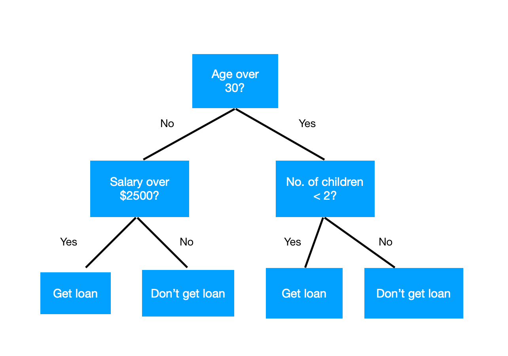
Warto zauważyć, że taka konstrukcja prowadzi zawsze do overfittingu. Otrzymanie liści czystych oznacza, że mamy 100% dokładności na zbiorze treningowym, czyli perfekcyjnie przeuczony klasyfikator. W związku z tym nasze predykcje mają bardzo niski bias, ale bardzo dużą wariancję. Pomimo tego drzewa potrafią dać bardzo przyzwoite wyniki, a w celu ich poprawy można je regularyzować, aby mieć mniej "rozrośnięte" drzewo. Film dla zainteresowanych.
Mając wytrenowany klasyfikator, trzeba oczywiście sprawdzić, jak dobrze on sobie radzi. Tu natrafiamy na kolejny problem z klasyfikacją niezbalansowaną - zwykła celność (accuracy) na pewno nie zadziała! Typowo wykorzystuje się AUC, nazywane też AUROC (Area Under Receiver Operating Characteristic), bo metryka ta uwzględnia niezbalansowanie klas.
Bardzo dobre i bardziej szczegółowe wytłumaczenie, z interktywnymi wizualizacjami, można znaleźć tutaj. Dla preferujących filmy - tutaj.
Co ważne, z definicji AUROC, trzeba w niej użyć prawdopodobieństw klasy pozytywnej (klasy 1). W Scikit-learn'ie zwraca je metoda `.predict_proba()`, która w kolejnych kolumnach zwraca prawdopodobieństwa poszczególnych klas.
Uczenie zespołowe, bagging, lasy losowe
Bardzo często wiele klasyfikatorów działających razem daje lepsze wyniki niż pojedynczy klasyfikator. Takie podejście nazywa się uczeniem zespołowym (ensemble learning). Istnieje wiele różnych podejść do tworzenia takich klasyfikatorów złożonych (ensemble classifiers).Podstawową metodą jest bagging:
1. Wylosuj N (np. 100, 500, ...) próbek bootstrapowych (bootstrap sample) ze zbioru treningowego. Próbka bootstrapowa to po prostu losowanie ze zwracaniem, gdzie dla wejściowego zbioru z M wierszami losujemy M próbek (czyli tyle ile było w początkowym zbiorze), spośród N wylosowanych próbek. Będą tam powtórzenia, średnio nawet 1/3, ale się tym nie przejmujemy.
2. Wytrenuj klasyfikator bazowy (base classifier) na każdej z próbek bootstrapowych.
3. Stwórz klasyfikator złożony poprzez uśrednienie predykcji każdego z klasyfikatorów bazowych.
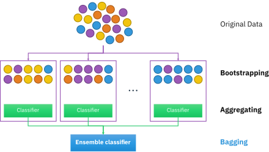
Typowo klasyfikatory bazowe są bardzo proste, żeby można było szybko wytrenować ich dużą liczbę. Prawie zawsze używa się do tego drzew decyzyjnych. Dla klasyfikacji uśrednienie wyników polega na głosowaniu - dla nowej próbki każdy klasyfikator bazowy ją klasyfikuje, sumuje się głosy na każdą klasę i zwraca najbardziej popularną decyzję.
Taki sposób uczenia zmniejsza wariancję klasyfikatora. Intuicyjnie, skoro coś uśredniamy, to siłą rzeczy będzie mniej rozrzucone, bo dużo ciężej będzie osiągnąć jakąś skrajność. Redukuje to też overfitting.
Lasy losowe (Random Forests) to ulepszenie baggingu. Zaobserwowano, że pomimo losowania próbek bootstrapowych, w baggingu poszczególne drzewa są do siebie bardzo podobne (są skorelowane), używają podobnych cech ze zbioru. My natomiast chcemy zróżnicowania, żeby mieć niski bias - redukcją wariancji zajmuje się uśrednianie. Dlatego używa się metody losowej podprzestrzeni (random subspace method) - przy każdym podziale drzewa losuje się tylko pewien podzbiór cech, których możemy użyć do tego podziału. Typowo jest to pierwiastek kwadratowy z ogólnej liczby cech.
Zarówno bagging, jak i lasy losowe mają dodatkowo bardzo przyjemną własność - są mało czułe na hiperparametry, szczególnie na liczbę drzew. W praktyce wystarczy ustawić 500 czy 1000 drzew i klasyfikator będzie dobrze działać. Dalsze dostrajanie hiperparametrów może jeszcze trochę poprawić wyniki, ale nie tak bardzo, jak przy innych klasyfikatorach. Jest to zatem doskonały wybór domyślny, kiedy nie wiemy, jakiego klasyfikatora użyć.
Dodatkowo jest to problem embarassingly parallel - drzewa można trenować w 100% równolegle, dzięki czemu jest to dodatkowo wydajna obliczeniowo metoda.
Głębsze wytłumaczenie, z interaktywnymi wizualizacjami, można znaleźć tutaj. Dobrze tłumaczy je też ta seria filmów.
Oversampling, SMOTE
W przypadku zbiorów niezbalansowanych można dokonać balansowania (balancing) zbioru. Są tutaj 2 metody:- undersampling: usunięcie przykładów z klasy dominującej
- oversampling: wygenerowanie dodatkowych przykładów z klasy mniejszościowej
Undersampling działa dobrze, kiedy niezbalansowanie jest niewielkie, a zbiór jest duży (możemy sobie pozwolić na usunięcie jego części). Oversampling typowo daje lepsze wyniki, istnieją dla niego bardzo efektywne algorytmy. W przypadku bardzo dużego niezbalansowania można zrobić oba.
Typowym algorytmem oversamplingu jest SMOTE (Synthetic Minority Oversampling TEchnique). Działa on następująco:
1. Idź po kolei po przykładach z klasy mniejszościowej.
2. Znajdź `k` najbliższych przykładów dla próbki, typowo `k=5`.
3. Wylosuj tylu sąsiadów, ile trzeba do oversamplingu, np. jeżeli chcemy zwiększyć klasę mniejszościową 3 razy (o 200%), to wylosuj 2 z 5 sąsiadów.
4. Dla każdego z wylosowanych sąsiadów wylosuj punkt na linii prostej między próbką a tym sąsiadem. Dodaj ten punkt jako nową próbkę do zbioru.

Taka technika generuje przykłady bardzo podobne do prawdziwych, więc nie zaburza zbioru, a jednocześnie pomaga klasyfikatorom, bo "zagęszcza" przestrzeń, w której znajduje się klasa pozytywna.
Algorytm SMOTE, jego warianty i inne algorytmy dla problemów niezbalansowanych implementuje biblioteka Imbalanced-learn. SMOTE używa się do zbalansowania zbioru treningowego (nie używa się go na zbiorze testowym!)
Dostrajanie (tuning) hiperparametrów
Lasy losowe są stosunkowo mało czułe na dobór hiperparametrów - i dobrze, bo mają ich dość dużo. Można zawsze jednak spróbować to zrobić, a w szczególności najważniejszy jest parametr `max_features`, oznaczający, ile cech losować przy każdym podziale drzewa. Typowo sprawdza się wartości z zakresu `[0.1, 0.5]`.W kwestii szybkości, kiedy dostrajamy hiperparametry, to mniej oczywiste jest, jakiego `n_jobs` użyć. Z jednej strony klasyfikator może być trenowany na wielu procesach, a z drugiej można trenować wiele klasyfikatorów na różnych zestawach hiperparametrów równolegle. Jeżeli nasz klasyfikator bardzo dobrze się uwspółbieżnia (jak Random Forest), to można dać mu nawet wszystkie rdzenie, a za to wypróbowywać kolejne zestawy hiperparametrów sekwencyjnie. Warto ustawić parametr `verbose` na 2 lub więcej, żeby dostać logi podczas długiego treningu i mierzyć czas wykonania. W praktyce ustawia się to metodą prób i błędów.
W praktycznych zastosowaniach osoba trenująca model wedle własnego uznana, doświadczenia, dostępnego czasu i zasobów wybiera, czy dostrajać hiperparametry i w jak szerokim zakresie. Dla Random Forest na szczęście często może nie być znaczącej potrzeby i za to go lubimy :) Random Forest - podsumowanie 1. Model oparty o uczenie zespołowe.
2. Kluczowe elementy: - bagging: uczenie wielu klasyfikatorów na próbkach bootstrapowych, - metoda losowej podprzestrzeni: losujemy podzbiór cech do każdego podziału drzewa, - uśredniamy głosy klasyfikatorów.
3. Dość odporny na overfitting, zmniejsza wariancję błędu dzięki uśrednianiu.
4. Mało czuły na hiperparametry.
5. Przeciętnie daje bardzo dobre wyniki, doskonały wybór domyślny przy wybieraniu algorytmu klasyfikacji.
Boosting
Drugą bardzo ważną grupą algorytmów ensemblingu jest boosting, też oparty o drzewa decyzyjne. O ile Random Forest trenował wszystkie klasyfikatory bazowe równolegle i je uśredniał, o tyle boosting robi to sekwencyjnie. Drzewa te uczą się na całym zbiorze, nie na próbkach bootstrapowych. Idea jest następująca: trenujemy drzewo decyzyjne, radzi sobie przeciętnie i popełnia błędy na częsci przykładów treningowych. Dokładamy kolejne, ale znające błędy swojego poprzednika, dzięki czemu może to uwzględnić i je poprawić. W związku z tym "boostuje" się dzięki wiedzy od poprzednika. Dokładamy kolejne drzewa zgodnie z tą samą zasadą.
Jak uczyć się na błędach poprzednika? Jest to pewna funkcja kosztu (błędu), którą chcemy zminimalizować. Zakłada się jakąś jej konkretną postać, np. squared error dla regresji, albo logistic loss dla klasyfikacji. Później wykorzystuje się spadek wzdłuż gradientu (gradient descent), aby nauczyć się, w jakim kierunku powinny optymalizować kolejne drzewa, żeby zminimalizować błędy poprzednika. Jest to konkretnie gradient boosting, absolutnie najpopularniejsza forma boostingu, i jeden z najpopularniejszych i osiągających najlepsze wyniki algorytmów ML.
Tyle co do intuicji. Ogólny algorytm gradient boostingu jest trochę bardziej skomplikowany. Bardzo dobrze i krok po kroku tłumaczy go ta seria filmów na YT. Szczególnie ważne implementacje gradient boostingu to XGBoost (Extreme Gradient Boosting) oraz LightGBM (Light Gradient Boosting Machine). XGBoost był prawdziwym przełomem w ML, uzyskując doskonałe wyniki i bardzo dobrze się skalując - był wykorzystany w CERNie do wykrywania cząstki Higgsa w zbiorze z pomiarów LHC mającym 10 milionów próbek. Jego implementacja jest dość złożona, ale dobrze tłumaczy ją inna seria filmików na YT.

Obecnie najczęściej wykorzystuje się LightGBM. Został stworzony przez Microsoft na podstawie doświadczeń z XGBoostem. Został jeszcze bardziej ulepszony i przyspieszony, ale różnice są głównie implementacyjne. Różnice dobrze tłumaczy ta prezentacja z konferencji PyData oraz prezentacja Microsoftu. Dla zainteresowanych - praktyczne aspekty LightGBM.
Boosting dzięki uczeniu na poprzednich drzewach redukuje nie tylko wariancję, ale też bias w błędzie, dzięki czemu może w wielu przypadkach osiągnąć lepsze rezultaty od lasu losowego. Do tego dzięki znakomitej implementacji LightGBM jest szybszy.
Boosting jest jednak o wiele bardziej czuły na hiperparametry niż Random Forest. W szczególności bardzo łatwo go przeuczyć, a większość hiperparametrów, których jest dużo, wiąże się z regularyzacją modelu. To, że teraz poszło nam lepiej z domyślnymi, jest rzadkim przypadkiem.
W związku z tym, że przestrzeń hiperparametrów jest duża, przeszukanie wszystkich kombinacji nie wchodzi w grę. Zamiast tego można wylosować zadaną liczbę zestawów hiperparametrów i tylko je sprawdzić - chociaż im więcej, tym lepsze wyniki powinniśmy dostać. Służy do tego `RandomizedSearchCV`. Co więcej, klasa ta potrafi próbkować rozkłady prawdopodobieństwa, a nie tylko sztywne listy wartości, co jest bardzo przydatne przy parametrach ciągłych.
Hiperparametry LightGBMa są dobrze opisane w oficjalnej dokumentacji: wersja krótsza i wersja dłuższa. Jest ich dużo, więc nie będziemy ich tutaj omawiać. Jeżeli chodzi o ich dostrajanie w praktyce, to przydatny jest oficjalny przewodnik oraz dyskusje na Kaggle.
Boosting - podsumowanie
1. Model oparty o uczenie zespołowe.
2. Kolejne modele są dodawane sekwencyjnie i uczą się na błędach poprzedników.
3. Nauka typowo jest oparta o minimalizację funkcji kosztu (błędu), z użyciem spadku wzdłuż gradientu.
4. Wiodący model klasyfikacji dla danych tabelarycznych, z 2 głównymi implementacjami: XGBoost i LightGBM.
5. Liczne hiperparametry, wymagające odpowiednich metod dostrajania.
Wyjaśnialna AI
W ostatnich latach zaczęto zwracać coraz większą uwagę na wpływ sztucznej inteligencji na społeczeństwo, a na niektórych czołowych konferencjach ML nawet obowiązkowa jest sekcja "Social impact" w artykułach naukowych. Typowo im lepszy model, tym bardziej złożony, a najpopularniejsze modele boostingu są z natury skomplikowane. Kiedy mają podejmować krytyczne decyzje, to musimy wiedzieć, czemu predykcja jest taka, a nie inna. Jest to poddziedzina uczenia maszynowego - wyjaśnialna AI (explainable AI, XAI).Taka informacja jest cenna, bo dzięki temu lepiej wiemy, co robi model. Jest to ważne z kilku powodów:
1. Wymogi prawne - wdrażanie algorytmów w ekonomii, prawie etc. ma coraz częściej konkretne wymagania prawne co do wyjaśnialności predykcji.
2. Dodatkowa wiedza dla użytkowników - często dodatkowe obserwacje co do próbek są ciekawe same w sobie i dają wiedzę użytkownikowi (często posiadającemu specjalistyczną wiedzę z dziedziny), czasem nawet bardziej niż sam model predykcyjny.
3. Analiza modelu - dodatkowa wiedza o wewnętrznym działaniu algorytmu pozwala go lepiej zrozumieć i ulepszyć wyniki, np. przez lepszy preprocessing danych.
W szczególności można ją podzielić na globalną oraz lokalną interpretowalność (global / local interpretability). Ta pierwsza próbuje wyjaśnić, czemu ogólnie model działa tak, jak działa. Analizuje strukturę modelu oraz trendy w jego predykcjach, aby podsumować w prostszy sposób jego tok myślenia. Interpretowalność lokalna z kolei dotyczy predykcji dla konkretnych próbek - czemu dla danego przykładu model podejmuje dla niego taką, a nie inną decyzję o klasyfikacji.
W szczególności podstawowym sposobem interpretowalności jest ważność cech (feature importance). Wyznacza ona, jak ważne są poszczególne cechy:
- w wariancie globalnym, jak mocno model opiera się na poszczególnych cechach,
- w wariancie lokalnym, jak mocno konkretne wartości cech wpłynęły na predykcję, i w jaki sposób.
Teraz będzie nas interesować globalna ważność cech. Dla modeli drzewiastych definiuje się ją bardzo prosto. Każdy podział w drzewie decyzyjnym wykorzystuje jakąś cechę i redukuje z pomocą podziału funkcję kosztu (np. entropię) o określoną ilość. Dla drzewa decyzyjnego ważność to sumaryczna redukcja entropii, jaką udało się uzyskać za pomocą danej cechy. Dla lasów losowych i boostingu sumujemy te wartości dla wszystkich drzew. Alternatywnie można też użyć liczby splitów, w jakiej została użyta dana cecha, ale jest to mniej standardowe.
Warto zauważyć, że taka ważność cech jest względna:
- nie mówimy, jak bardzo ogólnie ważna jest jakaś cecha, tylko jak bardzo przydatna była dla naszego modelu w celu jego wytrenowania,
- ważność cech można tylko porównywać ze sobą, np. jedna jest 2 razy ważniejsza od drugiej; nie ma ogólnych progów ważności.
Ze względu na powyższe, ważności cech normalizuje się często do zakresu [0, 1] dla łatwiejszego porównywania.
Najpopularniejszym podejściem do interpretowalności lokalnych jest SHAP (SHapley Additive exPlanations), metoda oparta o kooperatywną teorię gier. Traktuje się cechy modelu jak zbiór graczy, podzielonych na dwie drużyny (koalicje): jedna chce zaklasyfikować próbkę jako negatywną, a druga jako pozytywną. O ostatecznej decyzji decyduje model, który wykorzystuje te wartości cech. Powstaje pytanie - w jakim stopniu wartości cech przyczyniły się do wyniku swojej drużyny? Można to obliczyć jako wartości Shapleya (Shapley values), które dla modeli ML oblicza algorytm SHAP. Ma on bardzo znaczące, udowodnione matematycznie zalety, a dodatkowo posiada wyjątkowo efektywną implementację dla modeli drzewiastych oraz dobre wizualizacje.
Bardzo intuicyjnie, na prostym przykładzie, SHAPa wyjaśnia pierwsza część tego artykułu. Dobrze i dość szczegółówo SHAPa wyjaśnia jego autor w tym filmie. Wyjaśnialna AI - podsumowanie
1. Problem zrozumienia, jak wnioskuje model i czemu podejmuje określone decyzje.
2. Ważne zarówno z perspektywy badaczy danych, jak i użytkowników systemu.
3. Można wyjaśniać model lokalnie (konkretne predykcje) lub globalnie (wpływ poszczególnych cech).
Dokonaj selekcji cech, usuwając 20% najsłabszych cech. Może się tu przydać klasa `SelectPercentile`. Czy Random Forest i LightGBM (bez dostrajania hiperparametrów, dla uproszczenia) wytrenowane bez najsłabszych cech dają lepszy wynik (AUROC lub innej metryki)? Wykorzystaj po 1 algorytmie z 3 grup algorytmów selekcji cech: 1. Filter methods - mierzymy ważność każdej cechy niezależnie, za pomocą pewnej miary (typowo ze statystyki lub teorii informacji), a potem odrzucamy (filtrujemy) te o najniższej ważności. Są to np. `chi2` i `mutual_info_classif` z pakietu `sklearn.feature_selection`. 2. Embedded methods - klasyfikator sam zwraca ważność cech, jest jego wbudowaną cechą (stąd nazwa). Jest to w szczególności właściwość wszystkich zespołowych klasyfikatorów drzewiastych. Mają po wytrenowaniu atrybut `feature_importances_`. 2. Wrapper methods - algorytmy wykorzystujące w środku używany model (stąd nazwa), mierzące ważność cech za pomocą ich wpływu na jakość klasyfikatora. Jest to np. recursive feature elimination (klasa `RFE`). W tym algorytmie trenujemy klasyfikator na wszystkich cechach, wyrzucamy najsłabszą, trenujemy znowu i tak dalej. Typowo metody filter są najszybsze, ale dają najsłabszy wynik, natomiast metody wrapper są najwolniejsze i dają najlepszy wynik. Metody embedded są gdzieś pośrodku. Dla zainteresowanych, inne znane i bardzo dobre algorytmy: - Relief (filter method) oraz warianty, szczególnie ReliefF, SURF i MultiSURF (biblioteka `ReBATE`): Wikipedia, artykuł "Benchmarking Relief-Based Feature Selection Methods" - Boruta (wrapper method), stworzony na Uniwersytecie Warszawskim, łączący Random Forest oraz testy statystyczne (biblioteka `boruta_py`): link 1 , link 2
Sztuczne Sieci Neuronowe SSN - Artificial Neural Network ANN
Historia
-
1943 - Progowa Jednostka Logiczna - TLU (ang. Threshold Logic Unit) [McCulloch and Pitts]
- Pierwszy sztuczny neuron został opracowany w 1943 roku przez McCullocha i Pittsa. Nazywany jest również układem TLU (Progowa Jednostka Logiczna, ang. Threshold Logic Unit). Jest on uważany za prototyp perceptronu.
- wejściami są stany binarne (nie liczby)
-
1957 - Perceptron [Frank Rosenblat]
- Perceptron został opracowany w 1957 roku przez Franka Rosenblata w Cornell Aeronautical Laboratory na zlecenie Marynarki Wojennej USA.
- Jest to zmodyfikowany TLU, gdzie wejściami są liczby (a nie stany binarne jak w TLU), a kązde połączenie ma przyporządkowaną wagę
- perceptron składa się z jednej lub większej liczby TLU zorganizowanych w pojedyńczą warstwę (tylko 1 warstwa!) (warstwę gęstą, bo każda jednostka ma na wejściu wszystkie cechy wejściowe), gdzie warstwą wejściową nazywamy wektor cech, a wyjściową jednostki TLU generujące dane wyjściowe
- funkcj skokowa (aktywacji) perceptronu - funkcja skokowa Heaviside'a nie miała płynnego przejścia- albo 1 albo 0
- nie mógł rozwiązać problemu alternatywy rozłącznej - XOR
-
Perceptron jednowarstwowy
- sieć jednokierunkowa jednowarstwowa - jedna warstwa neuronów zasilnaych jedynie z wejść, warstwa gęsta bo połączenie jest pełne - każde wejście jest połączone z kązdym neuronem, przepływ sygnałów wstępuje w jednym kierunku od wejścia do wyjścia,
- węzły wejściowe nie tworzą warstwy neuronów bo nie zachodzi w nich żaden proces obliczeniowy
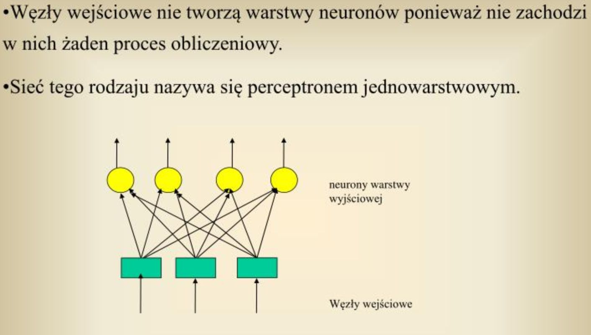
-
Perceptron wielowarstwowy - MLP (Multi Layer Perceptron)
- wiele warstw perceptronów mogły już rozwiązać problem alternatywy rozłącznej - XOR
- tutaj pojawił się problem z uczeniem warst ukrytych, bo zwykłe obliczanie gradientu prostego jest możliwe w odniesieniu do parametrów
- Właściwości sieci:
- Występuje co najmniej jedna warstwa ukryta neuronów, pośrednicząca w przekazywaniu sygnałów między węzłami wejściowymi a warstwą wyjściową
- Sygnały wejściowe są podawane na pierwszą warstwę ukrytą neuronów, a te z kolei stanowią sygnały źródłowe dla kolejnej warstwy
Pojęcia
- Wsteczna propagacja błędu (backpropagation)
- 1970 odwrotne różniczowanie automatyczne (reverse-mode automatic differentiation) - w sumie to była już propagacja wsteczna
- 1985 Rumelhart i inni - zmienili funkcję skokową w MLP na funkcję sigmoidalną
- bo funkcja skokowa jest nieróżniczkowalna, czyli ma w każdym punkcie pochodną równą 0 przez co nie pozwalała korzystać z gradientu
- natomiast funkcja sigmoidalna ma w każdym punkcie pochodną niezerową, dzięki czemu algorytm gradientu prostego może na każdym etapie uzyskiwać lepsze wyniki
- w rzeczywistości algorytm propagacji wstecznej współpracuje dobrze z innymi funkcjami aktwacji które są różniczkowalne: - tangensa hiperbolicznego - tanh
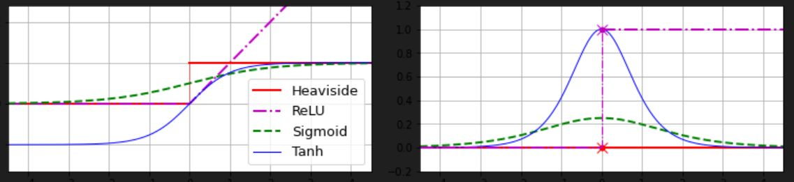
- ReLU - RectifiedLinear Unit - prostowana jednostka linowa - Działanie algorytmu wstecznej propagacji błędu:
- za każdym razem przetwarzana jest jedna minigrupa danych (np 32 przykłady), każdy przebieg nazywany jest epoką (epoch)
- przebieg w przód (forward pass) - obliczane są wyniki pośrednie dla każdego neuronu w sieci
- mierzymy błąd na wyjściu sieci - wykorzystujemy funkcję straty do uzyskania różnicy (błędu) między oczekiwanym a uzyskanym wynikiem
- przebieg w tył (back pass) - cofamy się sprawdzając wkład każdego wyniku neuronu w uzyskany błąd za pomocą reguły łańcuchowej aż do warstwy wejściowej, mierzony jest tu gradient błędu we wszystkich wagach połączeń
- na koniec modyfikacja wag i obciążeń połączeń sieci w celu zredukowania błędu (gradiencik prosty)
- warstwa gęsta - dense layer - warstwa w pełni połączona, czyli wszystkie neurony poprzedniej warstwy są połączone z neuronami następnej warstwy, lub wszystkie neurony są połączone ze wszystkimi wejściami cech
- warstwa wejściowa - input layer - sygnały wejściowe (wektor cech) - nazywana też warstwą neuronów ale tak naprawdę to nie są neurony bo nie mają funkcji aktywacji, są to po prostu cechy
- warstwa wyjściowa - output layer - neurony generujące dane wyjściowe z modelu
- reguła Hebba - w 1949 r Hebb mówił że połączenie między dwoma neuronami staje się silniejsze im częściej się pobudzają (komunikują)
- uczenie transferowe (transfer learning) - wykorzystanie dolnych warstw już nauczonej sieci i dotrenowanie górnych warstw do specyficznych danych np. w zdjęciach dolne warstwy mogą rozpoznawać twarze na zdjęciu, ale chcemy douczyć do konkretnych twarzy
Problem zanikających i ekspoldujących gradientów {str349}
* `zanikające gradienty (vanishing gradients)` - wartości gradientów maleją wraz z przebiegiem propagacji wstecznej do niższych warst sieci, przez co aktualizacja wag nie powoduje zmiany wag w połączeniach * `eksplodujące gradienty (expolding gradients)` - wartości gradientów stale rosną wraz z przebiegiem propagacji wstecznej do niższych warst sieci, przez co aktualizacja wag powoduje prawie losową zmianę wag w połączeniach - przez zjawisko `niestablinych gradientów` sieci były porzucone na początku XXI wieku, dopiero wyjaśniono to w 2010 roku w artykule Xaviera Glorota i Yoshua Bengio - odkryli że za tym stoi 1. zła początkowa inicjalizacja wag oraz 2. zła funkcja aktywacji - 1. inicjalizacje wag - wagi połączeń w każdej warstwie muszą być losowo inicjalizowane (Inicjalizacja Glorota lub Xaviera) - inicjalizacja Glorota dla sigmoidalnej, tan, softmax, brak - inicjalizacja He / Kaiming dla ReLU, przeciakającego ReLU, ELU, GELU, Swish, Mish - inicjalizacja LeCuna dla SELU - domyślnie Keras wyorzystuje inicjalizację Glorota z rozkładem jednostajnym - 2. lepsze funkcje aktywacji - wcześniej uważano że skoro w biologicznych neuronach działa funkcja sigmoidalna, to i w sztucznych sieciach też używali, ale był problem z nasyceniem funkcji sigmoidalnej w okolicach 0 i 1 no i ma średnią w 0.5, okazuje się że funkcja ReLU jest lepsza, bo nie ulega ona nasyceniu dla wartości dodatnich i jest szybsza obliczeniowoFunkcje aktywacji {351}
* `ReLU (rectified linear unit) - prostowana jednostka liniowa` - nie jest idealna bo znany jest problem śmierci ReLU (dying ReLU) - w czasie uczenia niektóre neurony trwale giną, czyli przesyłają tylko 0 najczęściej gdy na wejściu dostaje wartości ujemne i gradient już na niego nie wpływa bo pochodna ReLu przy ujemnych wartościach wynosi 0 * Funkcje niegładkie - ich pochodne zmieniają się gwałtownie w punkcie z=0, powoduje to że algorytm gradientu prostego przeskakuje w okolicach optimum - `przeciekająca funkcja ReLU (Leaky ReLU)` - zawiera niewielkie nachylenie dla wartości ujemnych, przez co neurony nie giną - `parametryczna przeciekająca funkcja ReLU (Parametric Leaky ReLU - PReLU)` - ma parametr który jest modyfikowany w trakcjie uczenia * Funkcje gładkie - pochodne zmieniają się gładko - są to gładkie warianty ReLU: - `jednostka wykładniczo liniowa ELU (exponential liner unit)` - dla z < 0: alfa(exp(z)-1) dla z>0: z - `skalowana ELU (scaled ELU) - SELU` - to samo co ELU ale dla alfa=1,65 - `gausowska jednostka liniowa GELU (Gaussian Error Linear Unit)` - gausowaki rozkład - `sigmoidalna jednostka liniowa - Swish` - z sigma(beta z) - `też sigmoidalna jednostka liniowa - Mish` - log( 1 + exp(z)) - najnowsza i chyba najlepsza ale wymagająca obliczeniowo
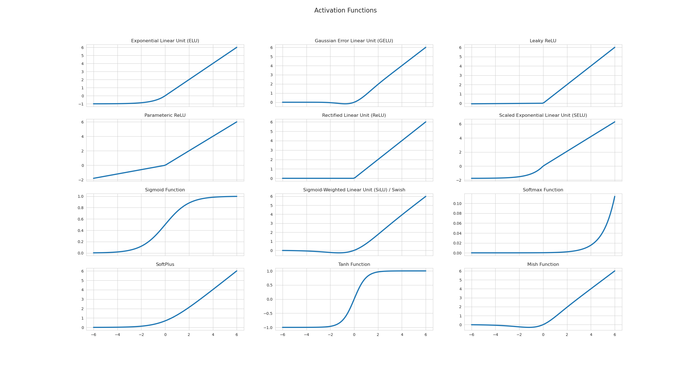
Dostrajanie hiperparametrów w sieci neuronowej {str341}
- `Liczba warstw ukrytych` - w przypadku wielu problemów wystarczą 1 lub 2 warstwy ukryte, im więcej będziemy dokładali warstw tym bardziej sieć się przetrenuje, czyli uczy na pamięć, ale do dużych problemów stosuje się i 10 warstw ale wtedy już korzysta się ze sprawdzonych architektur i tylko dotrenowuje się na swoim małym zbiorze danych - `Liczba neuronów w warstwach` - kiedyś stosowano piramidę, czyli stopniowo zmniejszano liczbę neuronów, ale to prowadzi do utraty informacji, bo warstwa z 2 neuronami może dać sygnał tylko dwuwymiarowy, więc jeśli otrzyma na wejściu dane trójwymiarowe to część informacji będie utracona - `współczynnik uczenia` - optymalny współczynnik uczenia podobno stanowi połowę maksymalnego współczynnika uczenia (wartość gdy algorytm staje się rozbieżny z rozwiązaniem), jednym ze sposobów na określenie najlepszego jest uczenie modelu i stopniowe zwiększanie współczynnika np. od 10e-5 do 10, mnożąc współczynnik o stały czynnik w każdej następnej iteracji {str343}, robimy wykres funkcji straty od współczynnika i tuż przed tym gdzie strata zaczyna rosnąć tam jest nasz optymalny współczynnik - `rozmiar grupy danych (batch size)` - niby od 2 do 32 bo szybciej się uczy wtedy ale duże też są dobre tylko trzeba używać techniki rozgrzewania współczynnika uczenia, czyli zaczynamy z małym i stopniowo go zwiększamyNormalizacja wsadowa (batch normalization)
- publikacja z 2015, BN polega na wstawianu operacji przed każdą funkcją aktywacji w każdej warstwie, dane wejściowe w tej operacji są wśrodkowane i znormalizowane - pomaga to modelowi określić optymalną skalę iśrednią danych wejściowych dla każdej warstwy czyli nawet w najwyższych warstwachRodzaje sieci (książka GERON):
Perceptron wielowarstwowy :
- *Modele klasyczne* (klasyfikujący i regresyjny) - sekwencyjne, czyli wszystkie dane muszą przechodzić przez wszystkie warstwy sieci, zatem proste wzorce mogą zostać zasłonięte przez sekwencję przekształceń - *Modele złożone* - - 1. Niesekwencyjne sieci: Wide&Deep {str324} - niektóre wejścia zostają połączone bezpośrednio z warstwą wyjściową, ma 2 ścieżki: głęboką i krótką, może poznawać wzorce głębokie przez ścieżkę głęboką (czyli normalna głęboka sieć) i proste reguły przez ścieżkę krótką Wszystko zaczęło się od inspirowanych biologią sztucznych neuronów, których próbowano użyć do symulacji mózgu. Naukowcy szybko odeszli od tego podejścia (sam problem modelowania okazał się też znacznie trudniejszy, niż sądzono), zamiast tego używając neuronów jako jednostek reprezentującą dowolną funkcję parametryczną $f(x, \Theta)$. Każdy neuron jest zatem bardzo elastyczny, bo jedyne wymagania to funkcja różniczkowalna, a mamy do tego wektor parametrów $\Theta$. W praktyce najczęściej można spotkać się z kilkoma rodzinami sieci neuronowych:- Perceptrony wielowarstwowe MultiLayer Perceptron MLP - najbardziej podobne do powyższego opisu, niezbędne do klasyfikacji i regresji
- Konwolucyjne Convolutional Neural Networks CNNs - do przetwarzania danych z zależnościami przestrzennymi, np. obrazów czy dźwięku
- Rekurencyjne Recurrent Neural Networks RNNs - do przetwarzania danych z zależnościami sekwencyjnymi, np. szeregi czasowe, oraz kiedyś do języka naturalnego
- Transformacyjne Transformers , oparte o mechanizm atencji attention - do przetwarzania języka naturalnego (NLP), z którego wyparły RNNs, a coraz częściej także do wszelkich innych danych, np. obrazów, dźwięku
- Grafowe Graph Neural Networks GNNS) - do przetwarzania grafów
Funkcje aktywacji
Funkcje aktywacji są sercem sztucznych neuronów w sieci neuronowej. Te kluczowe elementy wprowadzają nieliniowość do modelu, przekształcając ważone wejścia, aby wygenerować wynik. Prosto mówiąc, funkcja aktywacji decyduje, jak dużo sygnału przekazać do następnej warstwy na podstawie otrzymanego wejścia. Ideą łączenia wielu ważonych sygnałów jest to, co pozwala sieciom neuronowym uczyć się bardzo złożonych zależności. Nieliniowy charakter tych funkcji jest kluczowy, aby sieci neuronowe mogły uczyć się na podstawie skomplikowanych danych. Gdybyśmy używali tylko liniowych funkcji aktywacji, bez względu na to, ile warstw byśmy dodali, sieć zachowywałaby się jak pojedynczy perceptron, ponieważ kompozycja funkcji liniowych wciąż jest funkcją liniową. Ogranicza to złożoność zadań, które sieć może rozwiązywać. Nieliniowe funkcje aktywacji, z drugiej strony, umożliwiają sieci uczenie się złożonych wzorców i rozwiązywanie trudnych problemów, dodając warstwy abstrakcji. Istnieje szeroka gama funkcji aktywacji wykorzystywanych w sieciach neuronowych, z których każda ma swoje unikalne zalety i zastosowania. Oto cztery popularne funkcje aktywacji:
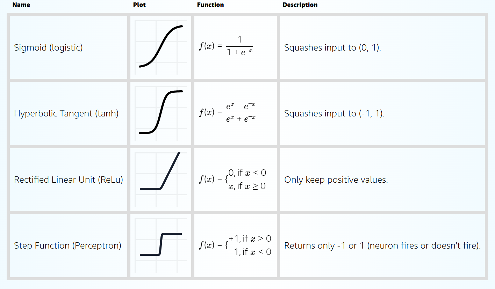
Sieci MLP
Dla przypomnienia, na wejściu mamy punkty ze zbioru treningowego, czyli $d$-wymiarowe wektory. W klasyfikacji chcemy znaleźć granicę decyzyjną, czyli krzywą, która oddzieli od siebie klasy. W wejściowej przestrzeni może być to trudne, bo chmury punktów z poszczególnych klas mogą być ze sobą dość pomieszane. Pamiętajmy też, że regresja logistyczna jest klasyfikatorem liniowym, czyli w danej przestrzeni potrafi oddzielić punkty tylko linią prostą. Sieć MLP składa się z warstw. Każda z nich dokonuje nieliniowego przekształcenia przestrzeni (można o tym myśleć jak o składaniu przestrzeni jakąś prostą/łamaną), tak, aby w finalnej przestrzeni nasze punkty były możliwie liniowo separowalne. Wtedy ostatnia warstwa z sigmoidą będzie potrafiła je rozdzielić od siebie.
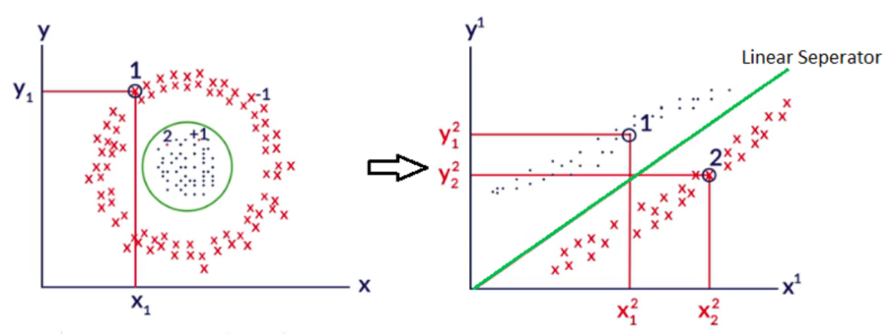
Poszczególne neurony składają się z iloczynu skalarnego wejść z wagami neuronu, oraz nieliniowej funkcji aktywacji. W PyTorchu są to osobne obiekty - `nn.Linear` oraz np. `nn.Sigmoid`. Funkcja aktywacji przyjmuje wynik iloczynu skalarnego i przekształca go, aby sprawdzić, jak mocno reaguje neuron na dane wejście. Musi być nieliniowa z dwóch powodów. Po pierwsze, tylko nieliniowe przekształcenia są na tyle potężne, żeby umożliwić liniową separację danych w ostatniej warstwie. Po drugie, liniowe przekształcenia zwyczajnie nie działają. Aby zrozumieć czemu, trzeba zobaczyć, co matematycznie oznacza sieć MLP.
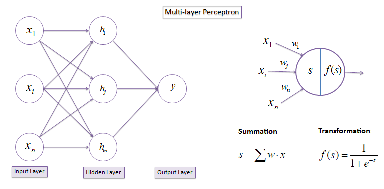
Zapisane matematycznie MLP to:
$$h_1 = f_1(x) \\
h_2 = f_2(h_1) \\
h_3 = f_3(h_2) \\
... \\
h_n = f_n(h_{n-1})$$
gdzie \(x\) to wejście \(f_i\) to funkcja aktywacji \(i\)-tej warstwy, a \(h_i\) to wyjście \(i\)-tej warstwy, nazywane ukrytą reprezentacją (hidden representation), lub *latent representation*. Nazwa bierze się z tego, że w środku sieci wyciągamy cechy i wzorce w danych, które nie są widoczne na pierwszy rzut oka na wejściu.
Załóżmy, że uczymy się na danych $x$ o jednym wymiarze (dla uproszczenia wzorów) oraz nie mamy funkcji aktywacji, czyli wykorzystujemy tak naprawdę aktywację liniową $f(x) = x$. Zobaczmy jak będą wyglądać dane przechodząc przez kolejne warstwy:
$$h_1 = f_1(xw_1) = xw_1 \\
h_2 = f_2(h_1w_2) = xw_1w_2 \\
... \\
h_n = f_n(h_{n-1}w_n) = xw_1w_2...w_n$$
gdzie $w_i$ to jest parametr \(i\)-tej warstwy sieci, \(x\) to są dane (w naszym przypadku jedna liczba) wejściowa, a \(h_i\) to wyjście \(i\)-tej warstwy.
Jak widać, taka sieć o $n$ warstwach jest równoważna sieci o jednej warstwie z parametrem \(w = w_1w_2...w_n\). Wynika to z tego, że złożenie funkcji liniowych jest także funkcją liniową - patrz notatki z algebry :)
Jeżeli natomiast użyjemy nieliniowej funkcji aktywacji, często oznaczanej jako $\sigma$, to wszystko będzie działać. Co ważne, ostatnia warstwa, dająca wyjście sieci, ma zwykle inną aktywację od warstw wewnątrz sieci, bo też ma inne zadanie - zwrócić wartość dla klasyfikacji lub regresji. Na wyjściu korzysta się z funkcji liniowej (regresja), sigmoidalnej (klasyfikacja binarna) lub softmax (klasyfikacja wieloklasowa).
Wewnątrz sieci używano kiedyś sigmoidy oraz tangensa hiperbolicznego `tanh`, ale okazało się to nieefektywne przy uczeniu głębokich sieci o wielu warstwach. Nowoczesne sieci korzystają zwykle z funkcji ReLU (*rectified linear unit*), która jest zaskakująco prosta: \(ReLU(x) = \max(0, x)\). Okazało się, że bardzo dobrze nadaje się do treningu nawet bardzo głębokich sieci neuronowych. Nowsze funkcje aktywacji są głównie modyfikacjami ReLU.

Wprowadzenie do PyTorcha
PyTorch to w gruncie rzeczy narzędzie do algebry liniowej z automatycznym rożniczkowaniem , z możliwością przyspieszenia obliczeń z pomocą GPU. Na tych fundamentach zbudowany jest pełny framework do uczenia głębokiego. Można spotkać się ze stwierdzenie, że PyTorch to NumPy + GPU + opcjonalne różniczkowanie, co jest całkiem celne. Plus można łatwo debugować printem :) PyTorch używa dynamicznego grafu obliczeń, który sami definiujemy w kodzie. Takie podejście jest bardzo wygodne, elastyczne i pozwala na łatwe eksperymentowanie. Odbywa się to potencjalnie kosztem wydajności, ponieważ pozostawia kwestię optymalizacji programiście. Więcej na ten temat dla zainteresowanych na końcu laboratorium. Samo API PyTorcha bardzo przypomina Numpy'a, a podstawowym obiektem jest `Tensor`, klasa reprezentująca tensory dowolnego wymiaru. Dodatkowo niektóre tensory będą miały automatycznie obliczony gradient. Co ważne, tensor jest na pewnym urządzeniu, CPU lub GPU, a przenosić między nimi trzeba explicite. Najważniejsze moduły: - `torch` - podstawowe klasy oraz funkcje, np. `Tensor`, `from_numpy()` - `torch.nn` - klasy związane z sieciami neuronowymi, np. `Linear`, `Sigmoid` - `torch.optim` - wszystko związane z optymalizacją, głównie spadkiem wzdłuż gradientuMLP w PyTorchu
Warstwę neuronów w MLP nazywa się warstwą gęstą (*dense layer*) lub warstwą w pełni połączoną (*fully-connected layer*), i taki opis oznacza zwykle same neurony oraz funkcję aktywacji. PyTorch, jak już widzieliśmy, definiuje osobno transformację liniową oraz aktywację, a więc jedna warstwa składa się de facto z 2 obiektów, wywoływanych jeden po drugim. Inne frameworki, szczególnie wysokopoziomowe (np. Keras) łączą to często w jeden obiekt. MLP składa się zatem z sekwencji obiektów, które potem wywołuje się jeden po drugim, gdzie wyjście poprzedniego to wejście kolejnego. Ale nie można tutaj używać Pythonowych list! Z perspektywy PyTorcha to wtedy niezależne obiekty i nie zostanie wtedy przekazany między nimi gradient. Trzeba tutaj skorzystać z `nn.Sequential`, aby tworzyć taki pipeline. Rozmiary wejścia i wyjścia dla każdej warstwy trzeba w PyTorchu podawać explicite. Jest to po pierwsze edukacyjne, a po drugie często ułatwia wnioskowanie o działaniu sieci oraz jej debugowanie - mamy jasno podane, czego oczekujemy. Niektóre frameworki (np. Keras) obliczają to automatycznie. Co ważne, ostatnia warstwa zwykle nie ma funkcji aktywacji. Wynika to z tego, że obliczanie wielu funkcji kosztu (np. entropii krzyżowej) na aktywacjach jest często niestabilne numerycznie. Z tego powodu PyTorch oferuje funkcje kosztu zawierające w środku aktywację dla ostatniej warstwy, a ich implementacje są stabilne numerycznie. Przykładowo, `nn.BCELoss` przyjmuje wejście z zaaplikowanymi już aktywacjami, ale może skutkować under/overflow, natomiast `nn.BCEWithLogitsLoss` przyjmuje wejście bez aktywacji, a w środku ma specjalną implementację łączącą binarną entropię krzyżową z aktywacją sigmoidalną. Oczywiście w związku z tym aby dokonać potem predykcji w praktyce, trzeba pamiętać o użyciu funkcji aktywacji. Często korzysta się przy tym z funkcji z modułu `torch.nn.functional`, które są w tym wypadku nieco wygodniejsze od klas wywoływalnych z `torch.nn`. Całe sieci w PyTorchu tworzy się jako klasy dziedziczące po `nn.Module`. Co ważne, obiekty, z których tworzymy sieć, np. `nn.Linear`, także dziedziczą po tej klasie. Pozwala to na bardzo modułową budowę kodu, zgodną z zasadami OOP. W konstruktorze najpierw trzeba zawsze wywołać konstruktor rodzica - `super().__init__()`, a później tworzy się potrzebne obiekty i zapisuje jako atrybuty. Każdy atrybut dziedziczący po `nn.Module` lub `nn.Parameter` jest uważany za taki, który zawiera parametry sieci, a więc przy wywołaniu metody `parameters()` - parametry z tych atrybutów pojawią się w liście wszystkich parametrów. Musimy też zdefiniować metodę `forward()`, która przyjmuje tensor `x` i zwraca wynik. Typowo ta metoda po prostu używa obiektów zdefiniowanych w konstruktorze. UWAGA: nigdy w normalnych warunkach się nie woła metody `forward` ręcznie Sieci neuronowe bardzo łatwo przeuczają, bo są bardzo elastycznymi i pojemnymi modelami. Dlatego mają wiele różnych rodzajów regularyzacji, których używa się razem. Co ciekawe, udowodniono eksperymentalnie, że zbyt duże sieci z mocną regularyzacją działają lepiej niż mniejsze sieci, odpowiedniego rozmiaru, za to ze słabszą regularyzacją. Pierwszy rodzaj regularyzacji to znana nam już regularyzacja L2, czyli penalizacja zbyt dużych wag. W kontekście sieci neuronowych nazywa się też ją czasem *weight decay*. W PyTorchu dodaje się ją jako argument do optymalizatora.Regularyzacja specyficzna dla sieci neuronowych
to dropout. Polega on na losowym wyłączaniu zadanego procenta neuronów podczas treningu. Pomimo prostoty okazała się niesamowicie skuteczna, szczególnie w treningu bardzo głębokich sieci. Co ważne, jest to mechanizm używany tylko podczas treningu - w trakcie predykcji za pomocą sieci wyłącza się ten mechanizm i dokonuje normalnie predykcji całą siecią. Podejście to można potraktować jak ensemble learning, podobny do lasów losowych - wyłączając losowe części sieci, w każdej iteracji trenujemy nieco inną sieć, co odpowiada uśrednianiu predykcji różnych algorytmów. Typowo stosuje się dość mocny dropout, rzędu 25-50%. W PyTorchu implementuje go warstwa `nn.Dropout`, aplikowana zazwyczaj po funkcji aktywacji. Ostatni, a być może najważniejszy rodzaj regularyzacji to wczesny stop (early stopping). W każdym kroku mocniej dostosowujemy terenową sieć do zbioru treningowego, a więc zbyt długi trening będzie skutkował przeuczeniem. W metodzie wczesnego stopu używamy wydzielonego zbioru walidacyjnego (pojedynczego, metoda holdout), sprawdzając co określoną liczbę epok wynik na tym zbiorze. Jeżeli nie uzyskamy wyniku lepszego od najlepszego dotychczas uzyskanego przez określoną liczbę epok, to przerywamy trening. Okres, przez który czekamy na uzyskanie lepszego wyniku, to cierpliwość (*patience*). Im mniejsze, tym mocniejszy jest ten rodzaj regularyzacji, ale trzeba z tym uważać, bo łatwo jest przesadzić i zbyt szybko przerywać trening. Niektóre implementacje uwzględniają tzw. *grace period*, czyli gwarantowaną minimalną liczbę epok, przez którą będziemy trenować sieć, niezależnie od wybranej cierpliwości. Dodatkowo ryzyko przeuczenia można zmniejszyć, używając mniejszej stałej uczącej. Opisaliśmy wcześniej podstawowy optymalizator w sieciach neuronowych - spadek wzdłuż gradientu. Jednak wymaga on użycia całego zbioru danych, aby obliczyć gradient, co jest często niewykonalne przez rozmiar zbioru. Dlatego wymyślono stochastyczny spadek wzdłuż gradientu (stochastic gradient descent, SGD), w którym używamy 1 przykładu naraz, liczymy gradient tylko po nim i aktualizujemy parametry. Jest to oczywiście dość grube przybliżenie gradientu, ale pozwala robić szybko dużo małych kroków. Kompromisem, którego używa się w praktyce, jest minibatch gradient descent, czyli używanie batchy np. 32, 64 czy 128 przykładów. Rzadko wspominanym, a ważnym faktem jest także to, że stochastyczność metody optymalizacji jest sama w sobie też metodą regularyzacji , a więc `batch_size` to także hiperparametr. Obecnie najpopularniejszą odmianą SGD jest Adam, gdyż uczy on szybko sieć oraz daje bardzo dobre wyniki nawet przy niekoniecznie idealnie dobranych hiperparametrach. W PyTorchu najlepiej korzystać z jego implementacji `AdamW`, która jest nieco lepsza niż implementacja `Adam`. Jest to zasadniczo zawsze wybór domyślny przy treningu współczesnych sieci neuronowych. Na razie użyjemy jednak minibatch SGD. Na koniec laboratorium dołożymy do naszego modelu jeszcze 3 powrzechnie używane techniki, które są bardzo proste, a pozwalają często ulepszyć wynik modelu. Pierwszą z nich są warstwy normalizacji (normalization layers). Powstały one początkowo z założeniem, że przez przekształcenia przestrzeni dokonywane przez sieć zmienia się rozkład prawdopodobieństw pomiędzy warstwami, czyli tzw. *internal covariate shift*. Później okazało się, że zastosowanie takiej normalizacji wygładza powierzchnię funkcji kosztu, co ułatwia i przyspiesza optymalizację. Najpowszechniej używaną normalizacją jest batch normalization (batch norm). Drugim ulepszeniem jest dodanie wag klas (class weights). Mamy do czynienia z problemem klasyfikacji niezbalansowanej, więc klasa mniejszościowa, ważniejsza dla nas, powinna dostać większą wagę. Implementuje się to trywialnie prosto - po prostu mnożymy wartość funkcji kosztu dla danego przykładu przez wagę dla prawdziwej klasy tego przykładu. Praktycznie każdy klasyfikator operujący na jakiejś ważonej funkcji może działać w ten sposób, nie tylko sieci neuronowe. Ostatnim ulepszeniem jest zamiana SGD na optymalizator Adam, a konkretnie na optymalizator `AdamW`. Jest to przykład optymalizatora adaptacyjnego (adaptive optimizer), który potrafi zaadaptować stałą uczącą dla każdego parametru z osobna w trakcie treningu. Wykorzystuje do tego gradienty - w uproszczeniu, im większa wariancja gradientu, tym mniejsze kroki w tym kierunku robimy. Jak widzieliśmy, sieci neuronowe mają bardzo dużo hiperparametrów. Przeszukiwanie ich grid search'em jest więc niewykonalne, a chociaż random search by działał, to potrzebowałby wielu iteracji, co też jest kosztowne obliczeniowo. Zaimplementuj inteligentne przeszukiwanie przestrzeni hiperparametrów za pomocą biblioteki Optuna. Implementuje ona między innymi algorytm Tree Parzen Estimator (TPE), należący do grupy algorytmów typu Bayesian search. Typowo osiągają one bardzo dobre wyniki, a właściwie zawsze lepsze od przeszukiwania losowego. Do tego wystarcza im często niewielka liczba kroków. Zaimplementuj 3-warstwową sieć MLP, gdzie pierwsza warstwa ma rozmiar ukryty N, a druga N // 2. Ucz ją optymalizatorem Adam przez maksymalnie 300 epok z cierpliwością 10. Przeszukaj wybrane zakresy dla hiperparametrów: - rozmiar warstw ukrytych (N) - stała ucząca - batch size - siła regularyzacji L2 - prawdopodobieństwo dropoutu Wykorzystaj przynajmniej 30 iteracji. Następnie przełącz algorytm na losowy (Optuna także jego implementuje), wykonaj 30 iteracji i porównaj jakość wyników.Przydatne materiały:
Optuna code examples - PyTorch
Auto-Tuning Hyperparameters with Optuna and PyTorch
Hyperparameter Tuning of Neural Networks with Optuna and PyTorch
Using Optuna to Optimize PyTorch Hyperparameters
Laby
Celem laboratorium jest zapoznanie się z podstawami sieci neuronowych oraz uczeniem głębokim (*deep learning*). Zapoznasz się na nim z następującymi tematami: - treningiem prostych sieci neuronowych, w szczególności z: - regresją liniową w sieciach neuronowych - optymalizacją funkcji kosztu - algorytmem spadku wzdłuż gradientu - siecią typu Multilayer Perceptron (MLP) - frameworkiem PyTorch, w szczególności z: - ładowaniem danych - preprocessingiem danych - pisaniem pętli treningowej i walidacyjnej - walidacją modeli - architekturą i hiperaprametrami sieci MLP, w szczególności z: - warstwami gęstymi (w pełni połączonymi) - funkcjami aktywacji - regularyzacją: L2, dropoutWykorzystywane biblioteki
Zaczniemy od pisania ręcznie prostych sieci w bibliotece Numpy, służącej do obliczeń numerycznych na CPU. Później przejdziemy do wykorzystywania frameworka PyTorch, służącego do obliczeń numerycznych na CPU, GPU oraz automatycznego różniczkowania, wykorzystywanego głównie do treningu sieci neuronowych. Wykorzystamy PyTorcha ze względu na popularność, łatwość instalacji i użycia, oraz dużą kontrolę nad niskopoziomowymi aspektami budowy i treningu sieci neuronowych. Framework ten został stworzony do zastosowań badawczych i naukowych, ale ze względu na wygodę użycia stał się bardzo popularny także w przemyśle. W szczególności całkowicie zdominował przetwarzanie języka naturalnego (NLP) oraz uczenie na grafach. Pierwszy duży framework do deep learningu, oraz obecnie najpopularniejszy, to TensorFlow, wraz z wysokopoziomową nakładką Keras. Są jednak szanse, że Google (autorzy) będzie go powoli porzucać na rzecz ich nowego frameworka JAX dyskusja , artykuł Business Insidera , który jest bardzo świeżym, ale ciekawym narzędziem. Trzecia, ale znacznie mniej popularna od powyższych opcja to Apache MXNet.Wprowadzenie
Zanim zaczniemy naszą przygodę z sieciami neuronowymi, przyjrzyjmy się prostemu przykładowi regresji liniowej W przeciwieństwie do laboratorium 1, tym razem będziemy chcieli rozwiązać ten problem własnoręcznie, bez użycia wysokopoziomowego interfejsu Scikit-learn'a. W tym celu musimy sobie przypomnieć sformułowanie naszego problemu optymalizacyjnego (optimization problem).W przypadku prostej regresji liniowej (1 zmienna) mamy model postaci \(\hat{y} = \alpha x + \beta\), z dwoma parametrami, których będziemy się uczyć. Miarą niedopasowania modelu o danych parametrach jest funkcja kosztu (cost function), nazywana też funkcją celu. Najczęściej używa się błędu średniokwadratowego (mean squared error, MSE): $$MSE = \frac{1}{N} \sum_{i}^{N} (y - \hat{y})^2$$ Od jakich \(\alpha\) i \(\beta\) zacząć? W najprostszym wypadku wystarczy po prostu je wylosować jako niewielkie liczby zmiennoprzecinkowe. Losowe parametry radzą sobie nie najlepiej. Jak lepiej dopasować naszą prostą do danych? Zawsze możemy starać się wyprowadzić rozwiązanie analitycznie, i w tym wypadku nawet nam się uda. Jest to jednak szczególny i dość rzadki przypadek, a w szczególności nie będzie to możliwe w większych sieciach neuronowych. Potrzebna nam będzie metoda optymalizacji (optimization method), dającą wartości parametrów minimalizujące dowolną różniczkowalną funkcję kosztu. Zdecydowanie najpopularniejszy jest tutaj spadek wzdłuż gradientu (gradient descent). Metoda ta wywodzi się z prostych obserwacji, które tutaj przedstawimy. Bardziej szczegółowe rozwinięcie dla zainteresowanych: sekcja 4.3 "Deep Learning Book", ten praktyczny kurs, analiza oryginalnej publikacji Cauchy'ego (oryginał w języku francuskim).
Pochodna jest dokładnie równa granicy funkcji. Dla małego \(\epsilon\) można ją przybliżyć jako: $$\frac{f(x)}{dx} \approx \frac{f(x+\epsilon) - f(x)}{\epsilon}$$ Przyglądając się temu równaniu widzimy, że:
dla funkcji rosnącej \(f(x+\epsilon) > f(x)\) wyrażenie \(\frac{f(x)}{dx}\) będzie miało znak dodatni
dla funkcji malejącej \(f(x+\epsilon) < f(x)\) wyrażenie \(\frac{f(x)}{dx}\) będzie miało znak ujemny
Widzimy więc, że potrafimy wskazać kierunek zmniejszenia wartości funkcji, patrząc na znak pochodnej. Zaobserwowano także, że amplituda wartości w $\frac{f(x)}{dx}$ jest tym większa, im dalej jesteśmy od minimum (maximum). Pochodna wyznacza więc, w jakim kierunku funkcja najszybciej rośnie, zaś przeciwny zwrot to ten, w którym funkcja najszybciej spada.
Stosując powyższe do optymalizacji, mamy: $$x_{t+1} = x_{t} - \alpha * \frac{f(x)}{dx}$$ \(\alpha\) to niewielka wartość (rzędu zwykle \(10^{-5}$ - $10^{-2}\)), wprowadzona, aby trzymać się założenia o małej zmianie parametrów (\(\epsilon\)). Nazywa się ją stałą uczącą (learning rate) i jest zwykle najważniejszym hiperparametrem podczas nauki sieci.
Metoda ta zakłada, że używamy całego zbioru danych do aktualizacji parametrów w każdym kroku, co nazywa się po prostu GD (od *gradient descent*) albo *full batch GD*. Wtedy każdy krok optymalizacji nazywa się epoką (epoch).
Im większa stała ucząca, tym większe nasze kroki podczas minimalizacji. Możemy więc uczyć szybciej, ale istnieje ryzyko, że będziemy "przeskakiwać" minima. Mniejsza stała ucząca to wolniejszy, ale dokładniejszy trening. Jednak nie zawsze ona pozwala osiągnąć lepsze wyniki, bo może okazać się, że utkniemy w minimum lokalnym. Można także zmieniać stałą uczącą podczas treningu, co nazywa się learning rate scheduling (LR scheduling). Obrazowo:
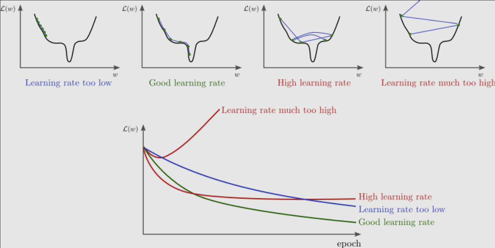
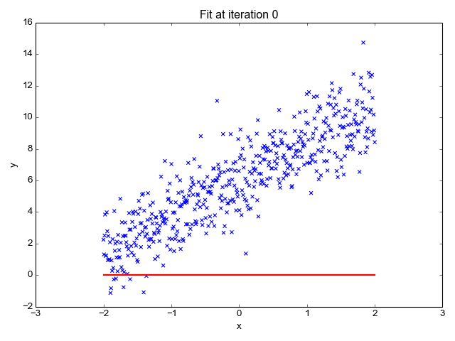
Policzmy więc pochodną dla naszej funkcji kosztu MSE. Pochodną liczymy po parametrach naszego modelu, bo to właśnie ich chcemy dopasować tak, żeby koszt był jak najmniejszy: $$MSE = \frac{1}{N} \sum_{i}^{N} (y_i - \hat{y_i})^2$$
W powyższym wzorze tylko \(y_i\) jest zależny od \(a\) oraz \(b\). Możemy wykorzystać tu regułę łańcuchową (*chain rule*) i policzyć pochodne po naszych parametrach w sposób następujący: $$\frac{\text{d} MSE}{\text{d} a} = \frac{1}{N} \sum_{i}^{N} \frac{\text{d} (y_i - \hat{y_i})^2}{\text{d} \hat{y_i}} \frac{\text{d} \hat{y_i}}{\text{d} a}$$ $$\frac{\text{d} MSE}{\text{d} b} = \frac{1}{N} \sum_{i}^{N} \frac{\text{d} (y_i - \hat{y_i})^2}{\text{d} \hat{y_i}} \frac{\text{d} \hat{y_i}}{\text{d} b}$$ Policzmy te pochodne po kolei: $$\frac{\text{d} (y_i - \hat{y_i})^2}{\text{d} \hat{y_i}} = -2 \cdot (y_i - \hat{y_i})$$ $$\frac{\text{d} \hat{y_i}}{\text{d} a} = x_i$$ $$\frac{\text{d} \hat{y_i}}{\text{d} b} = 1$$ Łącząc powyższe wyniki dostaniemy: $$\frac{\text{d} MSE}{\text{d} a} = \frac{-2}{N} \sum_{i}^{N} (y_i - \hat{y_i}) \cdot {x_i}$$ $$\frac{\text{d} MSE}{\text{d} b} = \frac{-2}{N} \sum_{i}^{N} (y_i - \hat{y_i})$$ Aktualizacja parametrów wygląda tak: $$a' = a - \alpha * \left( \frac{-2}{N} \sum_{i=1}^N (y_i - \hat{y}_i) \cdot x_i \right)$$ $$b' = b - \alpha * \left( \frac{-2}{N} \sum_{i=1}^N (y_i - \hat{y}_i) \right)$$ Liczymy więc pochodną funkcji kosztu, a potem za pomocą reguły łańcuchowej "cofamy się", dochodząc do tego, jak każdy z parametrów wpływa na błąd i w jaki sposób powinniśmy go zmienić. Nazywa się to propagacją wsteczną (backpropagation) i jest podstawowym mechanizmem umożliwiającym naukę sieci neuronowych za pomocą spadku wzdłuż gradientu. Więcej możesz o tym przeczytać tutaj.